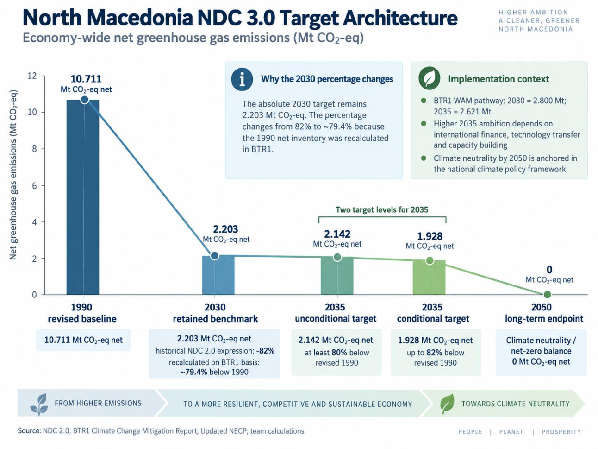
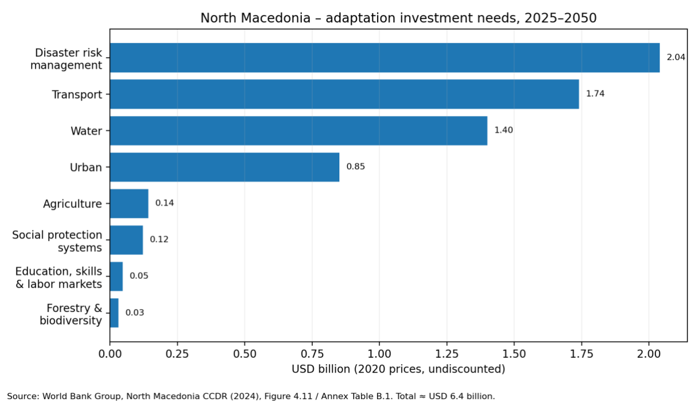

This document was prepared within the framework of the project “From Pledge to Impact” – NDC 3.0 of the Climate Promise initiative, implemented by the United Nations Development Programme (UNDP) and the Ministry of Environment and Physical Planning (MoEPP) of the Republic of North Macedonia. The project supports the revision of the Nationally Determined Contribution (NDC) in line with the obligations under the United Nations Framework Convention on Climate Change (UNFCCC) and the Paris Agreement.
National Contact Person for the UNFCCC
Dr. Teodora Obradovic Grncarovska
UNDP Team
Jozhe Jovanovski, M.Sc. - Project Manager
Anita Kodzoman - Programme Officer
Darko Crvenkovski - Programme Associate
MANU Team
Academician Ljupcho Kocarev
Prof. Mirko Todorovski, PhD, Corresponding Member of MANU
Aleksandar Dedinec, PhD, Senior Research Associate
Verica Taseska-Gjorgievska, PhD, Senior Research Associate
Vasko Popovski, M.A.
Prof. Aleksandra Dedinec, PhD
Jana Prodanova, PhD
Tatjana Dzambazovska, PhD
Emilia Mihajloska Ivanoski, M.Sc.
Onur Amet, B.Sc. Eng.
Project Working Group on Climate Change established by the Ministry of Environment and Physical Planning
Office of the President of the Republic of North Macedonia
Prof. Vlado Spiridonov, Ph.D, member
Aleksandra Mihajlovska Stojanova, deputy member
Government of the Republic of North Macedonia - Office of the Prime Minister
Prof. Dame Dimitrovski, Ph.D, member
Elizabeta Pangovska, deputy member
Ministry of Energy, Mining and Mineral Resources
Mino Markovski, member
Marija Trpevska, deputy member
Ministry of Education and Science
Safet Neziri, member
Nadica Kostoska, deputy member
Ministry of Digital Transformation
Olivera Jaksic Trantalovska, member
Tomas Jamalov, deputy member
Ministry of Social Policy, Demography and Youth
Jasmina Ivanova, member
Svetlana Cvetkovska, deputy member
Ministry of Foreign Affairs and Foreign Trade
Ilir Islami, member
Ministry of Transport
Irena Jovanova Popovska, member
Ministry of Agriculture, Forestry and Water Economy
Frosina Simoska, member
Maja Lazareska Joveska, deputy member
Ministry of Culture and Tourism
Davcha Spasova, member
Elena Pavlova, deputy member
Ministry of Local Self-Government
Trajche Malov, member
Ibrahim Idrizi, deputy member
Ministry of European Affairs
Njomza Rochi Xheladini, member
Irena Marinova, deputy member
Ministry of Finance
Marina Stanojkova Arsovski, member
Elena Karanfiloska, deputy member
Spatial Planning Agency
Hristina Odzaklieska, member
Andriana Andreeva, deputy member
Agency for Innovation, Scientific and Technological Development and Entrepreneurship
Marija Janevska, member
Brankica Miladinova, deputy member
Regulatory Commission for Energy, Water and Municipal Waste Management Services of the Republic of North Macedonia
Katarina Mancheva, member
Bojana Stojchevska, deputy member
Institute for Standardization of the Republic of North Macedonia
Violeta Shareska-Djakovska, M.Sc., member
Ruzica Jovanovic Malinovska, PhD, deputy member
Hydrometeorological Directorate
Aleksandra Stevkov, member
Aleksandar Prodanov, deputy member
Crisis Management Center
Stevko Stefanoski, Ph.D, member
Oliver Ristevski, deputy member
Directorate for Protection and Rescue
Sevganija Ibrahimi, member
Dejan Stojanoski, deputy member
Civil Aviation Agency
Antun Belamaric, member
Marija Filipova Spremo, deputy member
Public Health Institute
Prof. Igor Spiroski, Ph.D, member
Dzhansun Bukovec, Ph.D, deputy member
PE Nacionalni Shumi
Vladimir Biboski, member
Blagoja Razmoski, deputy member
Association of Local Self-Government Units – ZELS
Vesna Nikolovska, member
Ivana Serafimova, deputy member
Red Cross of the Republic of North Macedonia
Biljana Zhurovska, member
Oliver Gichevski, deputy member
AD Elektrani na Severna Makedonija (ESM)
Tanja Kocareva, member
Mile Jakimovski, deputy member
Joint Stock Company for the Performance of Energy Activity and Transmission of Natural Gas in State Ownership – NOMAGAS, Skopje
Bojan Nikolovski, member
Dijana Boshkovska, deputy member
Union of Chambers of Commerce of Macedonia – SSKM
Zagorka Blazevska, member
Business Confederation of North Macedonia
Mile Boshkov, member
Bojan Todorovski, deputy member
Confederation of Trade Unions of Macedonia (SSM)
Igor Gjerasov, member
Elena Petrova Mihajlovska, deputy member
Confederation of Free Trade Unions of Macedonia (KSS)
Zharko Kraus, member
Vasko Perchakovski, deputy member
Chamber of Commerce of North-West Macedonia
Sefedin Mustafa, member
Employers' Organization of Macedonia (ORM)
Aleksandar Spasevski, member
Vesna Velichkovska, deputy member
Representatives of the NGO - the National Climate Coalition
Elena Nikolovska, member
Filip Stojanovski, deputy member
Representatives of youth organizations
Ankica Sokolic, member
Sofija Getova, deputy member
|
AFOLU |
Agriculture, Forestry and Other Land Use |
|
BTR |
Biennial Transparency Report |
|
BTR1 |
First Biennial Transparency Report |
|
BTR2/NC5 |
Second Biennial Transparency Report and Fifth National Communication |
|
CBAM |
Carbon Border Adjustment Mechanism |
|
CCDR |
Country Climate and Development Report |
|
CHP |
Combined Heat and Power |
|
CMA |
Conference of the Parties serving as the meeting of the Parties to the Paris Agreement |
|
CPFR |
Climate Public Finance Review |
|
EEA |
European Environment Agency |
|
eNDC |
Enhanced Nationally Determined Contribution |
|
ESM |
AD Elektrani na Severna Makedonija |
|
ETF |
Enhanced Transparency Framework |
|
EU |
European Union |
|
EUR |
Euro |
|
F-gas |
Fluorinated gas |
|
GDP |
Gross Domestic Product |
|
GHG |
Greenhouse Gas |
|
GIS |
Geographic Information System |
|
GWP |
Global Warming Potential |
|
ICTU |
Information to facilitate Clarity, Transparency and Understanding |
|
IPCC |
Intergovernmental Panel on Climate Change |
|
IPPU |
Industrial Processes and Product Use |
|
ITMOs |
Internationally Transferred Mitigation Outcomes |
|
LULUCF |
Land Use, Land-Use Change and Forestry |
|
M&E |
Monitoring and Evaluation |
|
MANU |
Macedonian Academy of Sciences and Arts |
|
MoEPP |
Ministry of Environment and Physical Planning |
|
MRV |
Measurement, Reporting and Verification |
|
MRVA |
Monitoring, Reporting, Verification and Accreditation |
|
NDC |
Nationally Determined Contribution |
|
NECP |
National Energy and Climate Plan |
|
PV |
Photovoltaic |
|
QA/QC |
Quality Assurance / Quality Control |
|
SDGs |
Sustainable Development Goals |
|
SMEs |
Small and Medium-sized Enterprises |
|
UAE |
United Arab Emirates |
|
UNDP |
United Nations Development Programme |
|
UNFCCC |
United Nations Framework Convention on Climate Change |
|
UNICEF |
United Nations Children's Fund |
|
USD |
United States Dollar |
|
WAM |
With Additional Measures |
|
WEM |
With Existing Measures |
|
WOM |
Without Measures |
|
CH4 |
Methane |
|
CO2 |
Carbon dioxide |
|
CO2-eq |
Carbon dioxide equivalents |
|
HFCs |
Hydrofluorocarbons |
|
N2O |
Nitrous oxide |
|
NF3 |
Nitrogen trifluoride |
|
PFCs |
Perfluorocarbons |
|
SF6 |
Sulfur hexafluoride |
|
Unit |
Name |
Unit for |
Metric prefixes |
Prefix |
Factor |
|
g |
gram |
mass |
P |
peta |
1015 |
|
W |
watt |
power |
T |
tera |
1012 |
|
J |
joule |
energy |
G |
giga |
109 |
|
m |
metre |
length |
M |
mega |
106 |
|
Wh |
watt-hour |
energy |
k |
kilo |
103 |
|
toe |
tonnes of oil equivalent |
energy |
h |
hecto |
102 |
|
da |
deca |
101 |
|||
|
Mass conversion units |
d |
deci |
10-1 |
||
|
1g |
c |
centi |
10-2 |
||
|
1kg |
= 1 000 g |
m |
milli |
10-3 |
|
|
1t |
= 1 000 kg |
= 1 Mg |
μ |
micro |
10-6 |
|
1kt |
= 1 000 tons |
= 1 Gg |
n |
nano |
10-9 |
|
1Mt |
= 1 000 000 tons |
= 1 Tg |
p |
pico |
10-12 |
Unit convention used in the document: national and sectoral greenhouse-gas quantities are reported in Gg CO2-eq, consistent with national inventory and BTR reporting; marginal abatement costs remain expressed in EUR/t CO2-eq because they represent cost per unit of emissions reduced. Energy quantities are expressed in ktoe/Mtoe.
REPUBLIC OF NORTH MACEDONIA
Nationally Determined Contribution 3.0
Communicated to the United Nations Framework Convention on Climate Change (UNFCCC) under Article 4 of the Paris Agreement
Skopje, 2026
The Republic of North Macedonia presents its third Nationally Determined Contribution (NDC) under the Paris Agreement at a moment when the evidence on which climate policy rests has never been clearer, and when the window for acting on it has never been narrower. The first global stocktake concluded that the world is not on track to meet the temperature goal of the Paris Agreement and called on all Parties to come forward with contributions that are economy-wide, that cover all greenhouse gases and that are aligned with limiting warming to 1.5 °C. This contribution is our answer to that call.
The mitigation contribution retains the standing 2030 absolute net-emissions commitment of approximately 2,203 Gg CO₂-eq and extends the national pathway to 2035. Following recalculation of the 1990 inventory, the same 2030 absolute level is equivalent to approximately 79.4 per cent below the revised 1990 net level, which is two percentage points below the 82 per cent set out in the revised NDC of 2021. For 2035, the Republic of North Macedonia communicates an unconditional economy-wide net greenhouse-gas reduction target of at least 80 per cent below the revised 1990 level and a conditional level of up to 82 per cent, subject to substantially increased international financial, technological and capacity-building support. Both are intermediate milestones on the pathway to climate neutrality by 2050.
Two convictions shape this document. The first is that mitigation and adaptation are of equal standing. North Macedonia is highly exposed to drought, heatwaves, wildfire and flash flooding affecting water, agriculture, forests, health, infrastructure and settlements. Adaptation is therefore communicated as a substantive component with sectoral objectives, time-bound outcomes and indicators, quantified where reliable baselines and national data systems allow.
The second conviction is that the transition must be just. Decarbonisation will change the economic base of specific regions and specific communities, and it will do so within the lifetime of this contribution. The Government therefore commits to anticipatory action for workers and regions affected by the phase-down of lignite, to protection of energy-poor households, and to the full participation of women, young people, vulnerable groups and persons with disabilities in both the design and the benefits of climate action.
Delivery of this contribution is inseparable from our accession to the European Union (EU). The instruments through which it will be implemented — the National Energy and Climate Plan (NECP), the obligations we carry as a Contracting Party to the Energy Community, and the progressive transposition of the climate and energy acquis — are the same instruments that carry us towards membership. Part of the contribution can be financed domestically and is communicated as unconditional. A further part depends on international climate finance, technology transfer and capacity-building at the scale identified in this document. On that basis the Republic of North Macedonia stands ready to implement.
This document constitutes the third nationally determined contribution (NDC 3.0) of the Republic of North Macedonia, communicated under Article 4 of the Paris Agreement. It establishes a 2035 target while retaining the country's existing 2030 absolute mitigation commitment as an interim benchmark. The implementation period is 1 January 2026 to 31 December 2035, and the long-term endpoint is climate neutrality by 2050, as established in the national climate-policy framework.
The contribution has been prepared in accordance with the guidance adopted under the Paris Agreement. Annex I provides the information necessary for clarity, transparency and understanding in the sequence of Annex I to decision 4/CMA.11 of the Conference of the Parties serving as the meeting of the Parties to the Paris Agreement (CMA). Accounting follows Annex II to decision 4/CMA.1 and the Enhanced Transparency Framework (ETF) under decision 18/CMA.12; the 2035 end date reflects decision 6/CMA.33 on common time frames. The adaptation component is informed by decision 9/CMA.1 and the United Arab Emirates (UAE) Framework for Global Climate Resilience adopted by decision 2/CMA.54, and the contribution is informed by the outcome of the first global stocktake.
NDC 3.0 is a policy document. A separate Technical Background Document provides the underlying greenhouse-gas inventory reconciliation, mitigation modelling of the First Biennial Transparency Report (BTR1)5, Updated NECP analysis, climate-risk and vulnerability assessment, just-transition and social analyses, climate-finance assessment, technology and capacity needs, and the review of recent NDC practice. The numerical values and policy choices communicated here are therefore traceable to a documented analytical evidence base.
The unconditional component will be implemented through domestic public resources, commercially viable private investment and international support already secured or firmly committed. The higher conditional level depends on additional international finance, technology transfer and capacity-building at a scale commensurate with the remaining implementation gap. Progress towards both components will be tracked through the Enhanced Transparency Framework and reported in successive Biennial Transparency Reports (BTRs).
This contribution was prepared under the coordination of the Ministry of Environment and Physical Planning (MoEPP), in its capacity as national focal point to the United Nations Framework Convention on Climate Change, with technical support from the Macedonian Academy of Sciences and Arts (MANU) and from sectoral institutions of the Republic of North Macedonia.
The Government expresses its appreciation to the line ministries and to the members of the inter-ministerial working group; to the State Statistical Office, the Energy, Water Services and Municipal Waste Management Services Regulatory Commission of the Republic of North Macedonia, the National Hydrometeorological Service and the institutions responsible for forests, water, agriculture, public health and crisis management, which supplied the data on which the analysis rests; and to the municipalities and the associations of local self-government, whose participation shaped the adaptation and just transition components.
The Government further acknowledges the contribution of academia and research institutions, of the private sector and financial institutions, of civil society organisations, of women's organisations, of youth organisations including the Local Conference of Youth, of organisations of persons with disabilities, and of trade unions and workers' representatives in the regions most affected by the transition.
The preparation of this contribution was supported by the United Nations Development Programme (UNDP), under the Climate Promise initiative, with the participation of United Nations agencies active in the country, and benefited from cooperation with the Energy Community, the Delegation of the European Union, international financial institutions and bilateral partners.
The Republic of North Macedonia is a small, landlocked, upper-middle-income economy of approximately 1.8 million inhabitants in South-East Europe, a candidate for accession to the European Union and a Contracting Party to the Energy Community. Its share of global greenhouse gas emissions is negligible and its historical responsibility correspondingly limited, yet it ranks among the more climate-vulnerable countries in Europe. Warming above the global average, more frequent drought and heatwaves, wildfire, flash flooding and landslides already affect water resources, agriculture, forests, biodiversity, public health, infrastructure and settlements. Low responsibility combined with high exposure is the circumstance in which this contribution is made.
The contribution responds to the first global stocktake and to the 2025 NDC cycle by extending North Macedonia's mitigation horizon to 2035, maintaining economy-wide coverage and strengthening adaptation, finance, technology, capacity-building and transparency. Its design also responds to the national evidence that implementation, rather than identification of mitigation potential, is now the central challenge. The submission therefore distinguishes clearly between the standing 2030 commitment, the current BTR1 and NECP implementation pathways, and the higher 2035 NDC ambition.
The Republic of North Macedonia communicates an economy-wide absolute net greenhouse-gas target for 2035, and the key elements of the contribution are summarised in Table 1. The unconditional target is a reduction of at least 80% below 1990, corresponding to approximately 2,142 Gg CO₂-eq in 2035 compared with approximately 10,711 Gg CO₂-eq in 1990. Subject to substantially increased international financial and technical support, technology transfer, capacity-building and accelerated implementation, the conditional target is a reduction of up to 82% below 1990, corresponding to approximately 1,928 Gg CO₂-eq in 2035. The standing 2030 absolute commitment of approximately 2,203 Gg CO₂-eq is retained; technical details on inventory consistency and accounting are presented in the methodological sections rather than in the headline target statement.
Adaptation is communicated as a component of equal standing, structured around the thematic targets of the UAE Framework for Global Climate Resilience and addressing water, agriculture and food, forestry, biodiversity and ecosystems, health, infrastructure and human settlements, together with disaster risk reduction, loss and damage and nature-based solutions. Each priority sector carries an adaptation objective, priority actions and time-bound 2030 and 2035 outcomes, with quantitative indicators where established.
The investment requirements for NDC 3.0 can be framed against two recent national modelling and planning references. BTR1 estimates approximately EUR 22 billion of investment for the mitigation portfolio of the With Additional Measures (WAM) scenario to 2040, while the Updated NECP estimates approximately EUR 26.2 billion of investment over the period 2025–2040. The NECP estimate comprises approximately EUR 10.1 billion for 2025–2030 and EUR 16.0 billion for 2031–2040, corresponding to average annual investment needs of about EUR 1.7 billion and EUR 1.6 billion, respectively.
Because the NDC 3.0 mitigation pathway builds on broadly the same transformation portfolio, accelerated renewable-energy deployment, energy efficiency, building renovation, transport decarbonisation, grid infrastructure and the progressive phase-out of carbon-intensive generation, these two estimates provide a useful indicative range for the scale of investment required. Taken together, they suggest an investment requirement of approximately EUR 22–26 billion to 2040, equivalent to roughly EUR 1.4–1.6 billion per year.
For the period to the NDC 3.0 target year of 2035, the corresponding indicative investment envelope is approximately EUR 15–18 billion. The lower end is obtained by proportionally scaling the BTR1 WAM investment estimate to 2035, while the upper end is derived from the NECP investment profile: EUR 10.1 billion for 2025–2030 plus approximately EUR 8.0 billion for 2031–2035. This range should be understood as an indicative planning reference rather than a separately modelled cost of the NDC 3.0 target.
The unconditional component would be expected to rely primarily on domestic resources, already committed financing and mature investments included in the BTR1/NECP policy portfolio. Achievement of the higher conditional ambition would require additional international climate finance, concessional financing, technology transfer and capacity-building, particularly for measures requiring faster deployment or investment beyond the currently funded pipeline. A more detailed allocation between financing sources and implementation measures will be further developed through subsequent national sectoral, investment and financing planning.
For adaptation, a separate benchmark is available from the World Bank Group's Country Climate and Development Report (CCDR) for North Macedonia (2024)6. Its bottom-up assessment estimates approximately USD 6.4 billion of adaptation investment needs through 2050, equivalent to roughly USD 260 million per year and around 0.8–1.2% of gross domestic product (GDP) annually. The largest needs are in disaster risk management, transport, water and urban resilience. Because the CCDR adaptation estimate and the BTR1 mitigation estimate use different scopes, methodologies, currencies and time horizons, they are presented as complementary references and are not summed into a single NDC cost figure.
Accordingly, implementation finance is organised in layers. Mature, cost-effective measures and measures supported by domestic or already committed resources form the core of the unconditional component. Closing the gap between the current WAM pathway and the 2035 target requires faster project preparation, stronger policy implementation and additional capital. The upper conditional level is explicitly linked to substantial additional international finance, technology transfer and capacity-building rather than being presented as a purely domestic obligation.
The Ministry of Environment and Physical Planning coordinates implementation and international reporting. Its permanent transparency functions were strengthened in 2026 through the establishment of a Climate Action Sector within the Environmental Administration, including a Unit for Monitoring and Reporting and a Unit for Issuing Greenhouse Gas Emissions Permits. Sectoral ministries, statistical and technical institutions, municipalities, regulated entities, academia, civil society and the private sector contribute within their mandates. NDC tracking is designed to use the same validated data architecture as BTR1 and, where applicable, NECP/Energy Community reporting, including progressive use of Reportnet 3, the European Environment Agency (EEA) electronic platform for environmental and climate reporting (https://reportnet.europa.eu/).
Delivery of the conditional component depends on predictable multi-year international support, affordable access to technology, project-preparation assistance and strengthened national and municipal capacity. Implementation will be reviewed through the Biennial Transparency Report cycle. Where reported emissions or sectoral indicators diverge materially from the trajectory required for the 2030 benchmark or the 2035 target, corrective measures will be identified within the contribution period.
|
Element |
NDC 3.0 |
|
Type of contribution |
Economy-wide absolute net greenhouse gas (GHG) reduction; single-year 2035 target; retained 2030 absolute benchmark; substantive adaptation and resilience component |
|
Reference year |
1990 — BTR1 net level: ≈10,711 Gg CO₂-eq (gross ≈12,522 Gg; land use, land-use change and forestry (LULUCF) ≈−1,810 Gg) |
|
Implementation period |
1 January 2026 – 31 December 2035 |
|
2030 retained benchmark |
Net emissions ≤≈2,203 Gg CO₂-eq; historical NDC 2.0 absolute benchmark retained |
|
2035 unconditional target |
At least 80% below 1990; net emissions ≤≈2,142 Gg CO₂-eq |
|
2035 conditional target |
Up to 82% below 1990; net emissions ≤≈1,928 Gg CO₂-eq, subject to substantially increased international support |
|
2050 long-term endpoint |
Climate neutrality / net-zero GHG balance, as established in the national climate-policy framework |
|
Sectors covered |
Energy; industrial processes and product use; agriculture; land use, land-use change and forestry; waste |
|
Gases covered |
CO₂, CH₄, N₂O, HFCs, PFCs, SF₆ and NF₃ |
|
Metric |
100-year global warming potentials (GWP), Fifth Assessment Report of the Intergovernmental Panel on Climate Change (IPCC) |
|
Adaptation and resilience |
Seven priority sectors: Water; Agriculture and Food; Forestry; Biodiversity and Ecosystems; Health; Infrastructure; and Human Settlements. Time-bound 2030 and 2035 outcomes and quantitative indicators are defined where established. |
|
Investment reference |
Mitigation: Indicative investment envelope of approximately EUR 15–18 billion to 2035, derived from the BTR1 WAM and NECP investment trajectories; not a separately modelled cost of the NDC 3.0 target. Adaptation: World Bank CCDR (2024) estimates ≈USD 6.4 billion through 2050 (≈USD 260 million/year, about 0.8–1.2% of GDP annually), based on a separate bottom-up adaptation methodology; the two estimates should not be added directly. |
|
Voluntary cooperation |
No reliance on Article 6 transfers for achievement of the target; participation reserved subject to environmental integrity, corresponding adjustments and transparent reporting |
|
Transparency |
Tracked through the Enhanced Transparency Framework, BTRs and structured summary, with coordinated NDC/NECP/Energy Community data flows |
This document communicates the Republic of North Macedonia's third nationally determined contribution under Article 4 of the Paris Agreement. It sets the national mitigation contribution for 2035, retains and reconciles the existing 2030 absolute commitment, communicates an adaptation and resilience contribution, and identifies the means of implementation, governance and transparency arrangements needed for delivery.
The purpose of the contribution is threefold. First, it establishes a quantified national commitment that is consistent with the temperature goal of Article 2 of the Paris Agreement and that responds to the call of the first global stocktake for economy-wide contributions covering all greenhouse gases. Second, it provides a stable planning framework for domestic policy, investment and regulation over the coming decade, so that public authorities, enterprises, financial institutions and households can act on a known trajectory. Third, it constitutes the basis on which the country seeks international support, by identifying explicitly what can be financed domestically and what cannot.
The contribution is communicated in accordance with Article 4, paragraphs 2 and 9, of the Paris Agreement (ratified by the Republic of North Macedonia through the Law on Ratification of the Paris Agreement, Official Gazette of the Republic of Macedonia No. 161/2017)7 and with decision 1/CP.218. The information necessary for clarity, transparency and understanding is provided in Annex I (Table 14 to Table 20) in accordance with Annex I to decision 4/CMA.1. Accounting for anthropogenic emissions and removals follows Annex II to decision 4/CMA.1 and the common metrics adopted by decision 18/CMA.1. The end date of 2035 is consistent with decision 6/CMA.3 on common time frames. The adaptation component is communicated as a component of the nationally determined contribution in accordance with Article 7, paragraph 11, of the Paris Agreement and with decision 9/CMA.1, and is structured in accordance with decision 2/CMA.5 on the UAE Framework for Global Climate Resilience.
The Republic of North Macedonia ratified the United Nations Framework Convention on Climate Change9 in 1998, the Kyoto Protocol in 2004 and the Paris Agreement10 in November 2017. It communicated its first NDC in 2015 and its Enhanced NDC in 202111. NDC 3.0 constitutes the country's successive contribution for the 2035 time frame while explicitly retaining the existing 2030 absolute mitigation benchmark.
This contribution is a policy document. The analytical work on which it rests is published separately in the technical background document, which contains the review of the national greenhouse gas profile for the period 1990 to 2022, the assessment of implementation of the Enhanced NDC, the mitigation modelling framework and the without-measures, with-existing-measures and with-additional-measures scenarios, the climate risk and vulnerability assessment, the just transition, gender, youth and vulnerable-groups analyses, the climate finance assessment, the governance and transparency arrangements, and a review of relevant international practice.
Every quantified statement in this contribution is traceable to that document. Readers seeking the derivation of a target, the assumptions behind a scenario or the basis of a cost estimate are referred to the corresponding chapter, which is cited at the relevant point in the text.
Article 4, paragraph 9, of the Paris Agreement requires that each successive contribution be informed by the outcome of the global stocktake. The first global stocktake concluded in 2023 that Parties are collectively not on track, and it invited Parties to come forward with economy-wide contributions covering all greenhouse gases and all sectors, aligned with limiting warming to 1.5 °C, and informed by the calls to transition away from fossil fuels in energy systems, to triple renewable energy capacity and double the rate of energy efficiency improvement globally by 2030, and to accelerate adaptation and the mobilisation of means of implementation.
Five features of this contribution follow directly from that outcome. Coverage is economy-wide and extends to all seven greenhouse gases reported in the national inventory, including fluorinated gases outside the scope of the 2021 submission. The mitigation pathway accelerates renewable energy, energy efficiency, grids and storage and supports the transition away from fossil-fuel dependence. The end date is extended to 2035 while the 2030 absolute benchmark is retained. Adaptation is elevated to a substantive component aligned with the UAE Framework for Global Climate Resilience. Means of implementation are presented with the best available investment evidence and with explicit differentiation between unconditional delivery and additional ambition dependent on international support.
The circumstances described in this chapter are the reason for the design of the contribution that follows. They explain why an economy of this size communicates an absolute economy-wide target; why adaptation is given equal standing with mitigation; why part of the contribution is conditional; and why the transition is treated as a social and regional question as much as a technical one.
The Republic of North Macedonia covers 25,713 km² of predominantly mountainous terrain in the central Balkan Peninsula, with elevations ranging from below 50 metres in the Vardar valley to above 2,700 metres in the western massifs. The country has no access to the sea. Surface water resources are concentrated in the Vardar basin and in three large natural lakes, and a significant share of the population and of economic activity is located in the Skopje agglomeration and along the Vardar corridor.
The climate is transitional between Mediterranean and continental, with hot dry summers, cold winters and pronounced inter-annual variability in precipitation. That combination makes water availability, agricultural output and hydropower generation sensitive to relatively small climatic shifts. Observed warming has already exceeded the global average in parts of the territory. Projections indicate further temperature rise, longer and more intense heatwaves, declining and more erratic summer precipitation, and an increase in the frequency and severity of flash floods, wildfires and landslides.
Hazard is not distributed evenly across the territory. Flood exposure is concentrated in the Skopje agglomeration and in the lower Vardar and Strumica valleys; wildfire risk in the forested central and western municipalities; landslide risk in the steep western and northern terrain; and drought and heat stress in the eastern and south-eastern agricultural lowlands. The adaptation component of this contribution is differentiated accordingly.
The economy is small, open and highly trade-exposed, with gross domestic product averaging approximately EUR 15.5 billion. Manufacturing, energy, agriculture, construction and services are the principal sectors. Industrial production is concentrated in a limited number of energy- and material-intensive activities, and foreign direct investment is concentrated in the technological industrial development zones. Exports are oriented predominantly towards the European Union, which makes the competitiveness of domestic producers sensitive to European climate regulation, including the Carbon Border Adjustment Mechanism (CBAM).
The population of approximately 1.8 million is both declining and ageing, as a result of low fertility and sustained emigration. Demographic contraction constrains the availability of skilled labour for the construction, installation and maintenance occupations on which the transition depends, and it is one reason why the contribution treats skills policy as an integral part of climate policy rather than as an accompanying measure.
Two structural features shape the feasibility of this contribution. The first is that the energy system remains dependent on domestic lignite and on imported fossil fuels, so that decarbonisation is simultaneously a climate policy, an energy-security policy and a means of reducing import dependence. The second is that a substantial share of households experiences energy poverty and relies on inefficient solid-fuel heating, which links climate action directly to air quality, public health and household welfare. The National Development Strategy 2024–204412 identifies green transformation, a safe and resilient society and demographic revitalisation among its strategic areas, and provides the domestic policy anchor for this contribution.
In 2022, the latest year for which the national inventory is complete, total national emissions excluding LULUCF, shown by sector in Table 2, amounted to approximately 10,940 Gg CO₂-eq. Energy accounted for approximately 8,190 Gg CO₂-eq, agriculture for approximately 1,200 Gg CO₂-eq, waste for approximately 830 Gg CO₂-eq, and industrial processes and product use for approximately 720 Gg CO₂-eq. LULUCF was a net sink of approximately 3,086 Gg CO₂-eq, giving net national emissions of approximately 7,850 Gg CO₂-eq. BTR1 recalculates the 1990 gross level to approximately 12,522 Gg CO₂-eq and the 1990 LULUCF sink to approximately −1,810 Gg CO₂-eq, resulting in a revised 1990 net reference of approximately 10,711 Gg CO₂-eq.
Within the energy sector, electricity and heat production, road transport and residential heating are the dominant sources. Methane arises principally from enteric fermentation, manure management and solid waste disposal; nitrous oxide from agricultural soils and manure management; and fluorinated gases, although small in absolute terms, constitute the fastest-growing category and are fully covered by this contribution for the first time. The reduction achieved since 1990 reflects structural economic change and the contraction of energy-intensive industry more than deliberate climate policy. Achieving the targets of NDC 3.0 therefore requires substantially stronger and more targeted implementation of policies and measures.
The land-use sink is material but variable. Its inter-annual fluctuation is driven principally by wildfire, and a severe fire season can erase a substantial share of annual removals. Because the target communicated in Chapter 4 is expressed in net terms, the permanence of that sink is treated as a managed outcome with its own measures and indicators rather than as a residual balancing item.
The national share of global greenhouse-gas emissions is negligible. For transparency, implementation of this contribution will report both gross and net national emissions so that real mitigation performance is not obscured by year-to-year variability in land-sector removals.
|
Sector |
2022 emissions (Gg CO₂-eq) |
Share of gross total |
|
Energy |
≈ 8,190 |
≈ 75% |
|
Agriculture |
≈ 1,200 |
≈ 11% |
|
Waste |
≈ 830 |
≈ 8% |
|
Industrial processes and product use |
≈ 720 |
≈ 6% |
|
Gross total (excluding LULUCF) |
≈ 10,940 |
100% |
|
LULUCF (net sink) |
≈ −3,086 |
— |
|
Net total (including LULUCF) |
≈ 7,850 |
— |
Vulnerability results from the interaction of hazard, exposure, sensitivity and adaptive capacity, and it varies substantially across the territory and across population groups. The Livelihood Vulnerability Index applied in the Fourth National Communication, covering all eight planning regions and 71 municipalities, shows the lowest adaptive capacity in the eastern and south-eastern municipalities, where it coincides with high sensitivity and high exposure. Municipalities in the south-west and in Pelagonia are generally less vulnerable. The most exposed sectors are water, agriculture, forestry, biodiversity, health, infrastructure and human settlements.
Cascading and compound risks are of particular concern for a country of this size, because a single event can propagate across several sectors simultaneously. Wildfire is followed by soil erosion, flash flooding and landslides. Drought reduces agricultural output and hydropower generation in the same season, so that the fiscal cost of crop failure coincides with a higher import bill for electricity. Heatwaves strain the public health system and the electricity system at the same moment. The adaptation component is therefore designed around systems rather than around individual hazards.
The groups most exposed are low-income and energy-poor households, rural and remote communities, older persons and children, persons with disabilities, informal and outdoor workers, and residents of high-risk settlements. Adaptation measures will have limited effect if they do not reach these groups. Targeting measures towards the most vulnerable is therefore a core criterion in their planning and implementation.
Climate policy is framed by the National Energy and Climate Plan13, the Long-term Climate Action Strategy and Action Plan and the National Development Strategy 2024–2044, complemented by sectoral strategies. The draft Law on Climate Action, which is in the adoption process, is intended to provide the overarching legal framework and to anchor climate neutrality by 2050 as the long-term national endpoint. As an EU candidate country and Contracting Party to the Energy Community, North Macedonia is progressively aligning its energy and climate governance, carbon-pricing, renewable-energy, energy-efficiency and reporting systems with the EU acquis. These processes are treated as implementation vehicles for the NDC rather than as parallel policy tracks.
The Ministry of Environment and Physical Planning is the national focal point to the Convention and the central coordinating authority for climate policy and international reporting. In 2026, amendments to the Ministry's internal organisation and systematisation established a dedicated Climate Action Sector within the Environmental Administration, including a Unit for Monitoring and Reporting and a Unit for Issuing Greenhouse Gas Emissions Permits. Sectoral ministries, the State Statistical Office, technical agencies, municipalities and regulated entities remain responsible for the data and implementation functions falling within their mandates.
The Republic of North Macedonia has submitted four national communications, three biennial update reports and its first biennial transparency report, and maintains a continuous national greenhouse gas inventory covering 1990 onwards. That record provides the data foundation on which the present contribution is quantified and against which its implementation will be tracked, and it is the reason the country is able to communicate an absolute target against a 1990 reference year rather than a relative target against a projected baseline.
The country participates in the Energy Community, in the Green Agenda for the Western Balkans and in regional cooperation on electricity markets, water management and disaster risk reduction. It cooperates with the United Nations Development Programme, the United Nations Environment Programme, the World Bank, the European Bank for Reconstruction and Development, the European Investment Bank and bilateral partners, and accesses climate finance through the Green Climate Fund, the Global Environment Facility and the Adaptation Fund. As a candidate country it participates in the accession negotiation framework covering environment and climate change, and in the Growth Plan for the Western Balkans.
By 2050, the Republic of North Macedonia aims to achieve climate neutrality while building a climate-resilient, competitive and socially inclusive economy. NDC 3.0 establishes the 2035 milestone on that pathway and links the low-carbon transition to energy security, EU accession, resilient development and a just distribution of transition costs and benefits.
Six principles govern the design and the implementation of this contribution.
Preparation followed four stages. The first was technical assessment, comprising the review of the greenhouse gas inventory for 1990 to 2022, the assessment of implementation of the Enhanced NDC, mitigation modelling, climate risk and vulnerability assessment, and the climate finance assessment. The second was sectoral consultation with ministries and institutions, in which the modelled pathway was tested against sectoral plans and against what implementing institutions considered deliverable. The third was broad stakeholder consultation. The fourth was inter-ministerial review and adoption by the Government.
Consultation covered line ministries and the inter-ministerial working group; municipalities and the associations of local self-government; the private sector, including energy, industry, agriculture and financial institutions; academia and research institutions; civil society organisations; women's organisations; youth organisations, including the Local Conference of Youth; organisations of persons with disabilities; and trade unions and workers' representatives in the regions most affected by the transition. Dedicated gender, youth and vulnerable-groups analyses were commissioned, and their findings are reflected in the mitigation, adaptation and just transition components rather than reported separately.
Youth engagement was established as a standing mechanism with defined roles and feedback loops, rather than as periodic consultation.
The analytical basis of this contribution is the national greenhouse gas inventory, compiled in accordance with the 2006 IPCC Guidelines for National Greenhouse Gas Inventories and the 2019 Refinement, applying 100-year global warming potentials from the IPCC Fifth Assessment Report, and covering the full time series from 1990 for all sectors and all seven gases. Scope, definitions, data sources, metrics and methodological approaches are kept consistent between the communication and the implementation of the contribution, in accordance with Annex II to decision 4/CMA.1.
Mitigation analysis uses the BTR1 national mitigation assessment as the principal technical anchor, including least-cost energy-system optimisation and bottom-up modelling for agriculture, land use and waste. The NECP is used as the principal policy and implementation consistency test. Without Measures (WOM), With Existing Measures (WEM) and WAM scenarios are retained as analytical pathways, but modelled WAM outcomes are not treated automatically as the NDC target. Because the proposed 2035 target is more ambitious than the current WAM result, implementation requires an accelerated WAM+ package of measures, stronger enforcement and additional finance. Adaptation is assessed through hazard, exposure and vulnerability analysis and the National Adaptation Plan process.
The without-measures scenario provides the counterfactual for assessing mitigation effects and incremental investment. The with-existing-measures scenario reflects policies already adopted or under implementation. The with-additional-measures scenario represents the most recent integrated BTR1 mitigation pathway and is used as the technical starting point for implementation planning. BTR1 WAM reaches approximately 2,800 Gg CO₂-eq net emissions in 2030, 2,621 Gg in 2035 and 2,400 Gg in 2040. These values are modelled outcomes, not the NDC target levels. The NDC 3.0 target therefore makes the implementation gap explicit and requires further acceleration beyond the current WAM portfolio.
Article 4, paragraph 3, of the Paris Agreement requires each successive contribution to represent a progression beyond the Party's then current contribution and reflect its highest possible ambition. The Enhanced NDC of 2021 communicated a 2030 absolute net-emissions level of approximately 2,203 Gg CO₂-eq, expressed at the time as an 82 per cent reduction below the then-current 1990 inventory. BTR1 has since recalculated the 1990 net reference to approximately 10,711 Gg CO₂-eq. On that common inventory basis, the unchanged 2,203 Gg absolute 2030 ceiling is equivalent to approximately 79.4 per cent below 1990. This accounting change is not a weakening of the standing absolute commitment.
NDC 3.0 progresses beyond the Enhanced NDC by establishing a 2035 economy-wide target, expanding gas coverage to all seven greenhouse gases, strengthening the adaptation contribution, specifying unconditional and conditional 2035 levels, linking the upper level to identifiable support needs, and anchoring the pathway in the national 2050 climate-neutrality objective.
The progression represented by NDC 3.0 should not be assessed solely by comparing the percentage reduction in 2030 and 2035. As shown in Table 3, in addition to the deeper absolute reduction in net emissions, progression is reflected in the extension of the target horizon to 2035, economy-wide coverage of all inventory sectors and all seven greenhouse gases, a substantive adaptation and resilience contribution, strengthened transparency and tracking arrangements, and the introduction of a higher conditional level linked to additional international support. Together, these elements constitute a broader progression in scope, implementation architecture and ambition beyond the Enhanced NDC of 2021.
|
Element |
NDC 2.0 (2021) |
NDC 3.0 (this contribution) |
|
Target year |
2030 |
2035 target year, with the 2030 absolute commitment retained and reconciled on the latest inventory basis |
|
Headline target |
51% gross / 82% net reduction against 1990 |
2030: ≈2,203 Gg CO₂-eq net retained (≈79.4% on BTR1 revised base; historical expression 82%); 2035: ≥80% unconditional / up to 82% conditional |
|
Gases covered |
CO₂, CH₄, N₂O |
CO₂, CH₄, N₂O, HFCs, PFCs, SF₆ and NF₃ |
|
Adaptation |
Statement of intent to prepare a National Adaptation Plan |
Substantive adaptation and resilience contribution across seven priority sectors, aligned with the UAE Framework for Global Climate Resilience |
|
Social dimension |
Gender and youth analysis annexed |
Just transition, gender, youth, disability inclusion and energy poverty integrated into implementation and monitoring |
|
Means of implementation |
Investment estimated at 7.7% of average annual GDP |
Mitigation: BTR1 WAM investment reference ≈EUR 22 billion to 2040, with additional WAM+ effort and international support required to close the gap to the 2035 target. Adaptation: World Bank CCDR (2024) investment reference ≈USD 6.4 billion through 2050 (≈USD 260 million/year; ≈0.8–1.2% of GDP annually), based on a separate bottom-up methodology. |
The Republic of North Macedonia communicates an economy-wide absolute net greenhouse-gas emissions target for 2035, covering all five inventory sectors and all seven greenhouse gases. The unconditional target is at least an 80 per cent reduction below the revised 1990 net inventory; the conditional target is up to an 82 per cent reduction, subject to substantially increased international financial and technical support, technology transfer, capacity-building and accelerated implementation.
On the GHG inventory (2020-2022) basis of approximately 10,711 Gg CO₂-eq net emissions in 1990, these levels correspond provisionally to approximately 2,142 Gg CO₂-eq in 2035 for the unconditional target and approximately 1,928 Gg CO₂-eq for the conditional target. The existing 2030 absolute commitment of approximately 2,203 Gg CO₂-eq is retained as a separate benchmark. Gross emissions will be reported alongside net emissions to make the contribution of LULUCF removals transparent.
As noted in the previous chapter, the Enhanced NDC communicated approximately 2,203 Gg CO₂-eq of net emissions in 2030. Under the inventory available at the time, this was expressed as an 82 per cent reduction from 1990. BTR1 recalculates 1990 net emissions to approximately 10,711 Gg CO₂-eq, principally because of revised land-sector removals. Applying the revised denominator to the unchanged 2030 absolute ceiling gives an equivalent reduction of approximately 79.4 per cent.
NDC 3.0 therefore preserves the 2,203 Gg CO₂-eq absolute 2030 commitment and discloses both percentage expressions: 82 per cent as the historical NDC 2.0 formulation and approximately 79.4 per cent as the recalculated equivalent under the GHG inventory basis. Inventory recalculation is an accounting improvement; it is not counted as mitigation progress and does not change the absolute level of the existing commitment.
The 2035 target is deliberately close to the reconciled 2030 benchmark because the period to 2035 remains a transition phase. Current national planning includes rapid expansion of renewable generation, grids, storage and energy efficiency, while one additional gas-fired combined heat and power (CHP) plant is envisaged around 2030 as transitional dispatchable capacity, primarily for balancing, during the lignite phase-down. Deeper substitution of natural gas by hydrogen, advanced storage, industrial low-carbon technologies and, where technically and economically justified, carbon-management solutions is expected to contribute more materially after 2035.
The 80 per cent unconditional level, shown in Table 4, therefore represents a modest but measurable progression beyond the reconciled 2030 benchmark. The conditional level of up to 82 per cent represents additional ambition enabled by international support. Both levels are intermediate milestones on a pathway that must steepen after 2035 to achieve climate neutrality by 2050.
|
Element |
Value |
|
Type of target |
Absolute, economy-wide, single-year 2035 net GHG reduction target, with a retained 2030 absolute benchmark |
|
Reference year |
1990 — revised BTR1 net level: ≈10,711 Gg CO₂-eq |
|
2030 retained benchmark |
Net emissions ≤≈2,203 Gg CO₂-eq; ≈79.4% below revised BTR1 1990 net level; historical NDC 2.0 expression: 82% |
|
2035 target |
Unconditional: ≥80% below revised 1990 (≤≈2,142 Gg CO₂-eq); conditional: up to 82% (≤≈1,928 Gg CO₂-eq) subject to additional international support |
|
Sectors |
Energy; industrial processes and product use (IPPU); agriculture; LULUCF; waste |
|
Gases |
CO₂, CH₄, N₂O, HFCs, PFCs, SF₆, NF₃ |
|
Metric |
GWP-100, IPCC Fifth Assessment Report |
|
Accounting approach |
Net-net accounting against the revised 1990 reference year; gross emissions and LULUCF removals reported separately as transparency indicators |
|
Conditionality |
Unconditional and conditional target levels are explicit; the higher 2035 level is linked to additional international finance, technology transfer and capacity-building |
The target architecture is summarised in Figure 1, which distinguishes the retained 2030 absolute benchmark, the 2035 unconditional and conditional levels, and the 2050 climate-neutrality endpoint, while making the effect of the BTR1 inventory recalculation on the 2030 percentage expression explicit.

Table 5 presents the key reference values and pathways against which implementation of the contribution is assessed: the revised BTR1 1990 base, the latest 2022 inventory, the retained 2030 absolute benchmark, the current modelled pathways from BTR1 (WAM scenario) and the Updated NECP, the unconditional and conditional 2035 targets, and the long-term 2050 climate-neutrality endpoint.
The comparison shows that existing policies and measures are not yet sufficient to achieve the targets. Under the BTR1 WAM scenario, net emissions in 2030 would amount to approximately 2,800 Gg CO₂-eq, about 597 Gg above the retained 2030 benchmark, while the Updated NECP pathway, based on different assumptions, is approximately 2,147 Gg above it. For 2035, the unconditional target is approximately 479 Gg and the conditional target approximately 693 Gg below the BTR1 WAM outcome. This gap defines the additional effort to be delivered through accelerated implementation of existing measures, new policies and, for the conditional target, additional international support.
|
Reference / pathway |
Net GHG emissions |
Role / interpretation |
|
1990 revised BTR1 reference |
≈10,711 Gg CO₂-eq |
Reference point; gross ≈12,522 Gg and LULUCF sink ≈−1,810 Gg |
|
2022 latest inventory |
≈7,850 Gg CO₂-eq |
Latest complete inventory year; gross ≈10,940 Gg and LULUCF sink ≈−3,086 Gg |
|
2030 retained NDC benchmark |
≈2,203 Gg CO₂-eq |
Standing absolute commitment; ≈79.4% below revised BTR1 base; historical expression 82% |
|
2030 BTR1 WAM |
≈2,800 Gg CO₂-eq |
Current modelled WAM outcome; 597 Gg above the standing 2030 benchmark |
|
2030 Updated NECP |
≈4,350 Gg CO₂-eq |
Planning pathway based on different assumptions; ≈2,147 Gg above the standing 2030 benchmark |
|
2035 NDC unconditional target |
≤≈2,142 Gg CO₂-eq |
At least 80% below revised 1990; 479 Gg below BTR1 WAM 2035 |
|
2035 NDC conditional target |
≤≈1,928 Gg CO₂-eq |
Up to 82% below revised 1990; 693 Gg below BTR1 WAM 2035; additional support required |
|
2035 BTR1 WAM |
≈2,621 Gg CO₂-eq |
Technical implementation anchor; not automatically the NDC target |
|
2040 BTR1 WAM |
≈2,400 Gg CO₂-eq |
Directional continuation of current WAM; post-2035 pathway must accelerate |
|
2050 climate-neutrality endpoint |
Net GHG balance = 0 |
Long-term legal and strategic endpoint; residual emissions balanced by removals |
The unconditional 2035 target is at least 80 per cent below the revised 1990 net level, based on the greenhouse gas inventory up to 2022, approximately 2,142 Gg CO₂-eq. It is to be delivered through domestic policy instruments, public resources, commercially viable private investment and international financing already secured or firmly committed. Based on the BTR1/NECP investment envelope, the indicative cost of delivering the unconditional 2035 target is estimated at approximately EUR 15 billion, equivalent to around USD 16.9 billion. Implementation prioritises mature and cost-effective measures, including accelerated renewable deployment, energy efficiency, electrification where cost-effective, grid and storage development, improved waste management, agricultural mitigation, protection of the land-sector sink and the regulatory reforms required for delivery.
The conditional 2035 level is up to 82 per cent below the revised 1990 net level, provisionally approximately 1,928 Gg CO₂-eq. It is contingent on substantially increased international finance, technology transfer, capacity-building and project-preparation support. International support is expected to accelerate measures already identified in BTR1 and the NECP, particularly network reinforcement and storage, deep building renovation, rail and low-carbon transport, regional waste infrastructure, forest-fire management and industrial decarbonisation — rather than create a separate mitigation architecture.
The distinction between unconditional and conditional delivery will be maintained at measure and finance-source level and reported through the Biennial Transparency Report process. Where international support is not mobilised at the scale required for the conditional component, the country will report the resulting implementation gap transparently rather than treat the conditional level as an unconditional domestic obligation.
Sectoral effort is guided by the BTR1 least-cost pathway and the measures contained in the NECP, summarised by sector in Table 6. Energy provides the largest share of reductions, while waste, agriculture, industrial processes and LULUCF contribute through sector-specific measures. Because the 2035 NDC target is more ambitious than the current BTR1 WAM result, the sectoral values shown below are implementation anchors rather than fixed sectoral emission budgets; the additional WAM+ effort will be operationalised through subsequent sectoral policy updates, investment planning and implementation arrangements.
Progression under NDC 3.0 is assessed primarily against the 2021 Enhanced NDC (NDC 2.0), while the NDC Stocktake provides the principal implementation evidence for assessing how far the existing policy portfolio has advanced. The assessment combines indicator-based sectoral trends with measure-level implementation scoring and uses observed data through 2024 where available.
The NDC Stocktake for North Macedonia shows uneven implementation across the existing mitigation portfolio. Average implementation progress is estimated at approximately 65% for energy-sector measures, around 55% for waste-sector measures and just under 60% for additional and cross-cutting measures. Renewable-energy measures, particularly rooftop solar photovoltaic (PV) and solar thermal systems, show some of the strongest implementation progress, while several infrastructure and market-transformation measures remain delayed. The 400 kV interconnection with Albania, for example, received the lowest implementation score because of administrative, procurement and coordination delays.
Observed sectoral indicators also show that implementation outcomes do not always follow the original trajectory of the Enhanced NDC (eNDC). Primary and final energy consumption have generally remained below projected levels, while renewable-electricity deployment has accelerated. In 2023, renewable electricity reached approximately 32%, compared with around 37.3% in the WAM trajectory, and solar electricity generation exceeded 800 GWh in 2024. At the same time, the Rapid Assessment identifies persistent implementation and data gaps, including incomplete tracking of building renovation and rooftop PV, limited transport indicators, and weaker data foundations in Agriculture, Forestry and Other Land Use (AFOLU).
These findings are directly reflected in the design of NDC 3.0. Measures demonstrating effective implementation are retained and accelerated; measures facing regulatory, financing or institutional constraints are strengthened or revised; and additional attention is given to grid and storage capacity, transport decarbonisation, waste infrastructure, data systems, measurement, reporting and verification (MRV) and institutional coordination. BTR1 and the Updated NECP complement this stocktake by providing the latest inventory, modelling and policy-planning evidence base. Together, NDC 2.0, the Rapid Assessment / NDC Stocktake, BTR1 and the Updated NECP provide the basis for demonstrating progression and defining the sectoral pathways and policy measures of NDC 3.0.
Electricity and heat production is the largest single source of emissions and the largest single source of abatement. The pathway assumes a progressive phase-down of lignite-fired generation, replacement of that capacity principally by solar photovoltaic and wind, reinforcement and digitalisation of transmission and distribution networks, deployment of storage and demand-side flexibility, and deeper integration with regional electricity markets. Renewable energy reaches approximately 66 per cent of gross electricity production by 2030 under the Updated National Energy and Climate Plan. Sectoral emissions fall from a historical range of approximately 7,200 to 9,700 Gg CO₂-eq to approximately 5,300 Gg CO₂-eq in 2025 and approximately 3,500 Gg CO₂-eq in 2040, a structural reduction of roughly 60 per cent against the historical peak.
Two conditions govern delivery. The first is network capacity: without transmission reinforcement and storage, the rate of renewable connection becomes the binding constraint rather than the rate of project development. The second is the sequencing of the lignite phase-down with regional transition support, so that closure follows the establishment of alternative employment and municipal revenue rather than preceding it.
The building stock is the second-largest source of reductions and the largest source of domestic co-benefits. The pathway assumes deep thermal retrofit of residential and public buildings, near-zero-energy standards for new construction, and the replacement of inefficient solid-fuel heating with heat pumps, efficient district heating and solar thermal systems. These measures carry the greater part of the energy-efficiency contribution to the target, generate the largest number of domestic jobs — the retrofit of existing residential buildings alone accounted for more than 40 per cent of new green jobs in the analysis prepared for the Enhanced NDC — and deliver the bulk of the projected reduction in fine particulate emissions. Support schemes are targeted at energy-poor households, for the reasons set out in Chapter 6.
Transport emissions have grown with vehicle ownership and freight volumes and are the hardest to abate in the near term. The pathway combines modal shift to rail and public transport, modernisation of Corridors VIII and X, renewal and electrification of the passenger and light commercial vehicle fleet, deployment of charging infrastructure, and sustainable urban mobility planning in the larger municipalities. Renewable energy reaches approximately 10 per cent of final energy consumption in transport by 2030. Because fleet turnover is slow, the measures taken in this decade determine the emissions level in the next, and vehicle taxation, import standards and public procurement are used to accelerate turnover rather than to raise revenue.
Industrial emissions arise from both combustion and process sources and are concentrated in a small number of installations, which makes the sector administratively tractable even where abatement is technically demanding. The pathway assumes energy management systems and process efficiency, electrification and fuel switching where technically feasible, material efficiency and circular-economy practice, and control of fluorinated gases in refrigeration and air conditioning. The extension of carbon pricing consistent with the European Union framework, and the response of exporters to CBAM, are expected to be the principal drivers of investment in this sector.
Agricultural emissions are dominated by methane from enteric fermentation and manure management and by nitrous oxide from soils and fertiliser use. The pathway assumes improved manure management including anaerobic digestion, optimised and precision fertiliser application, improved livestock feeding and productivity, and the expansion of organic and conservation practices. Abatement in this sector is modest in absolute terms but closely aligned with the adaptation agenda, because the same measures improve soil moisture retention, input efficiency and farm resilience. Delivery runs through agricultural support payments and advisory services rather than through regulation alone.
The land-use sector is the only net sink and is therefore decisive for a target expressed in net terms. The sink amounted to approximately −3,086 Gg CO₂-eq in 2022 and is assumed to remain between −3,000 and −3,400 Gg CO₂-eq after 2030. That assumption is conditional on integrated forest fire management reducing the average annual burned area to approximately 3,000 hectares by 2030, on continued afforestation and reforestation with climate-adapted native species, and on the restoration of degraded and fire-affected land. A severe fire season can erase a substantial share of annual removals, which is why the sink is managed as an asset with dedicated measures and indicators. Forests cover approximately 1,027,065 hectares, close to 40 per cent of the national territory; state forests account for around 90 per cent of that area and 92 per cent of growing stock, while private forests, though only about 10 per cent of the area, are fragmented across more than 200,000 parcels held by approximately 65,000 households, averaging 0.6 hectares — a structural obstacle to both sustainable management and fire protection that the contribution addresses through owner association and advisory support.
Waste emissions arise principally from methane at non-compliant landfills. The pathway assumes the closure and rehabilitation of substandard sites, the establishment of regional waste management systems with landfill gas capture and utilisation, separate collection and recycling, and biowaste treatment. Circular-economy measures assessed for the Enhanced NDC, covering construction and demolition waste, biowaste and packaging, provide additional abatement while reducing pressure on land and water resources. Because waste management is a municipal competence, delivery in this sector is the clearest test of the municipal capacity-building commitments in Chapter 7.
Cross-cutting enablers include progressive carbon-pricing alignment with the European Union framework; green public procurement; energy-market reform; support to enterprises for efficiency, decarbonisation and CBAM preparedness; and research, innovation and digitalisation. Digital and artificial-intelligence applications are treated as enabling tools for load and renewable-generation forecasting, smart-grid operation, predictive maintenance, industrial energy management, hydrological and wildfire forecasting, climate-risk analytics and quality assurance of MRV data, subject to appropriate data governance, interoperability and cybersecurity.
|
Sector |
Principal measures |
Period |
Component |
Estimated Costs |
|
Energy supply |
Solar and wind deployment; phase-down of lignite generation with regional transition support; transmission and distribution reinforcement and digitalisation; storage and system flexibility; market integration; carbon pricing |
2025–2030 |
Unconditional (deployment); conditional (networks, storage, coal-region transition) |
EUR 1.720 billion |
|
Buildings |
Deep thermal retrofit of residential and public stock; near-zero-energy standards for new build; replacement of solid-fuel heating with heat pumps, efficient district heating and solar thermal; targeted support for energy-poor households |
2025–2030 |
Unconditional (standards, shallow retrofit); conditional (deep retrofit at scale) |
EUR 7.267 billion |
|
Transport |
Modal shift to rail and public transport; Corridor VIII and X modernisation; fleet renewal and electrification; charging infrastructure; sustainable urban mobility plans |
2025–2030 |
Unconditional (fiscal and planning measures); conditional (rail modernisation) |
EUR 1.150 billion |
|
Industry and IPPU |
Energy management systems and process efficiency; electrification and fuel switching; material efficiency and circular economy; control of fluorinated gases |
2025–2030 |
Unconditional (efficiency, fluorinated gas (F-gas) control); conditional (process electrification) |
Not separately estimated |
|
Agriculture |
Manure management and anaerobic digestion; optimised and precision fertiliser application; improved livestock feeding and productivity; organic and conservation practices |
2025–2030 |
Unconditional |
Not separately estimated |
|
LULUCF |
Integrated forest fire management with automated detection and rapid response; afforestation and reforestation with native species; restoration of degraded and fire-affected land; climate-informed management planning |
2025–2030 |
Conditional (fire management infrastructure); unconditional (planning, silviculture) |
Not separately estimated |
|
Waste |
Closure and rehabilitation of non-compliant landfills; regional waste systems with landfill gas capture; separate collection, recycling and biowaste treatment; circular-economy measures |
2025–2030 |
Conditional (regional systems); unconditional (gas capture at larger sites) |
Not separately estimated |
|
Cross-cutting |
Carbon pricing; green public procurement; energy-market reform; support to small and medium-sized enterprises (SMEs); research, innovation and digitalisation; municipal capacity-building |
2025–2030 |
Unconditional |
Not separately estimated |
The values shown in Table 7 are existing 2030 energy and climate targets for North Macedonia under the Energy Community and Updated NECP framework. They are used in NDC 3.0 as implementation benchmarks and delivery indicators for the energy transition; they should not be interpreted as standalone 2035 sectoral targets of NDC 3.0. The economy-wide NDC 3.0 target applies to 2035, while the detailed allocation of additional sectoral effort beyond the existing 2030 targets will be further defined through subsequent sectoral and investment planning and implementation arrangements.
|
Indicator (Updated National Energy and Climate Plan) |
2030 target |
|
Renewable energy share in gross final energy consumption |
38% |
|
Renewable energy share in gross electricity production |
66% |
|
Renewable energy share in heating and cooling |
45% |
|
Renewable energy share in transport final energy consumption |
10% |
|
Final energy consumption |
2.00 Mtoe |
|
Primary energy consumption |
2.3 Mtoe |
The Republic of North Macedonia does not rely on internationally transferred mitigation outcomes to achieve this contribution. The target is designed to be met through domestic measures, and the trajectory in Table 5 contains no assumed acquisition of units. The country nonetheless reserves the possibility of participating in cooperative approaches under Article 6 of the Paris Agreement, including in the mechanism established by Article 6, paragraph 4.
Should it do so, the Republic of North Macedonia will apply the guidance adopted by the Conference of the Parties serving as the meeting of the Parties to the Paris Agreement; ensure environmental integrity and the avoidance of double counting through the application of corresponding adjustments; ensure that participation does not displace domestic action or reduce the ambition of this contribution; and report transparently on any authorisation, first transfer, use or cancellation of units in its biennial transparency reports and in the annual information required under decision 2/CMA.3.
The adaptation vision of the Republic of North Macedonia is a society, an economy and a natural environment able to anticipate, absorb and recover from climate shocks without the loss of essential services or livelihoods. Adaptation is communicated as a component of equal standing with mitigation, in accordance with Article 7, paragraph 11, of the Paris Agreement, and constitutes the country's adaptation communication under Article 7, paragraph 10.
The component is structured around the thematic targets of the UAE Framework for Global Climate Resilience, adapted to national circumstances, and rests on four objectives: to reduce the exposure and sensitivity of people, assets and ecosystems to climate hazards; to maintain the continuity of essential services, water, energy, health, transport and communications, under climate stress; to protect the livelihoods most exposed to climate variability, particularly in agriculture, forestry and rural communities; and to build the institutional, informational and financial capacity to adapt iteratively as conditions change.
The adaptation evidence base also draws explicitly on the World Bank Group's North Macedonia Country Climate and Development Report (CCDR, 2024). The CCDR identifies rising risks from drought, floods, wildfire and extreme heat, assesses socioeconomic vulnerability at municipal level, and develops a cross-sector adaptation investment package. Its findings reinforce the prioritisation of water, agriculture and food, forestry and biodiversity, health, resilient infrastructure and settlements, while also highlighting disaster risk management, transport, social protection, and education, skills and labour markets as enabling areas for resilience.
Delivery runs through the National Adaptation Plan process and through the integration of climate risk into spatial, sectoral and municipal planning. Adaptation is linked to disaster risk reduction and to an approach for averting, minimising and addressing loss and damage, and is aligned with the Sendai Framework for Disaster Risk Reduction 2015–203014 and with the Kunming-Montreal Global Biodiversity Framework15.
By 2030 the Republic of North Macedonia will complete and regularly update national and municipal multi-hazard climate risk assessments; adopt and begin implementing the National Adaptation Plan with sectoral adaptation objectives and indicators, building on the priority outcomes and milestones by sector presented in Table 8, which constitute the initial set of adaptation indicators of NDC 3.0; apply climate-risk screening to all major public infrastructure investments as a condition of public investment approval; extend national early warning systems for heatwaves and hydro-meteorological hazards; and work towards reducing the average annual burned forest area to approximately 3,000 hectares.
By 2035 the country will mainstream climate and disaster risk into the spatial and development plans of all municipalities; measurably reduce water losses in public supply systems and expand efficient irrigation; expand green and blue infrastructure in the most heat- and flood-exposed municipalities; and operate a monitoring, evaluation and learning system focused on reduced vulnerability and maintained service continuity. Quantitative baselines and target values will be used where established in national systems and will be further operationalised through the National Adaptation Plan.
Water security is the binding constraint on several other sectors. The country withdraws approximately 8.4 per cent of its renewable freshwater resources, some three percentage points above the European Union average, while losses in municipal distribution networks reached approximately 62 per cent in 2020, and non-compliance with discharge obligations leaves a high share of water bodies polluted, particularly near urban, industrial and intensively farmed areas. Climate change compounds these pressures by reducing summer flows, shifting the timing of precipitation and increasing both drought and flash-flood frequency.
The adaptation objective is to strengthen the climate resilience, sustainability and equitable management of water resources and services. Priority actions are the modernisation of supply and distribution infrastructure to cut losses; integrated river basin management; the protection of headwater catchments and groundwater recharge zones; the upgrading of hydrological and water-quality monitoring and early warning; improved wastewater treatment and industrial water reuse; and transboundary cooperation across shared basins.
Agriculture remains central to rural livelihoods and food security while being highly exposed to drought, heat, frost, hail and flooding. Reliance on rain-fed production, inefficient irrigation infrastructure, livestock heat and water stress, and soil erosion during extreme events together translate climate variability directly into income loss. The adaptation objective is a productive, sustainable and climate-resilient agricultural and food system.
Priority actions are the expansion of modern, efficient and precision irrigation and of water storage; the introduction of drought- and heat-tolerant varieties and the conservation of locally adapted genetic resources; conservation agriculture, cover crops and erosion control to retain soil moisture; the adjustment of planting calendars, crop rotation and fertilisation supported by digital decision tools; integrated pest and disease management; agroforestry, windbreaks and protective vegetation; heat-tolerant livestock breeds with improved feeding, watering and housing; and stronger agro-meteorological early warning, advisory services and agricultural insurance, including micro-insurance for smallholders.
Forests cover approximately 1,027,065 hectares, close to 40 per cent of the national territory, of which deciduous forest accounts for approximately 607,843 hectares and mixed forest for approximately 315,426 hectares. Projections indicate a longer growing season and initially higher productivity to 2035, followed by decline by 2046–2065 as heat, drought and pest pressure intensify. The adaptation objective is to strengthen forest resilience and sustainable management, and it coincides directly with the mitigation objective of preserving the land-use sink.
Priority actions are integrated forest fire management with automated detection, monitoring and rapid response; climate-informed management planning that incorporates future climate scenarios into ten-year plans; climate-resilient silviculture using native and mixed species with diverse age classes; accelerated reforestation and restoration of fire-affected land; bioengineering and erosion control to limit post-fire landslide risk; and stronger local and community capacity for prevention and response, including support for the association of fragmented private holdings.
The country is characterised by high species richness and significant endemism, particularly in mountain and freshwater ecosystems, but protected areas currently cover only around 23 per cent of nationally important mountain biodiversity sites. Climate change interacts with habitat degradation, land-use change, agricultural runoff, water stress, pollution, tourism pressure and wildfire. The adaptation objective is to conserve, restore and strengthen the resilience of biodiversity and ecosystems while maintaining the services on which water security, livelihoods and disaster risk reduction depend.
Priority actions are the integration of climate risk into protected-area management; the expansion of the protected-area network and of ecological corridors; the restoration of degraded wetlands, lakeshores and riverine habitats; the scaling up of ecosystem-based adaptation and nature-based solutions; the establishment of long-term biodiversity monitoring; the mobilisation of ecosystem finance with local stewardship arrangements; and the remediation of environmental hotspots, including contaminated sites.
Rising temperatures and more frequent and intense heatwaves are the dominant climate-health risk, compounded by flood exposure, water scarcity, deteriorating air quality and changing patterns of vector-, water- and food-borne disease. Urban heat-island effects concentrate risk in densely built municipalities, and impacts fall disproportionately on older persons, children, people with chronic conditions, and outdoor and informal workers. The adaptation objective is to protect health and well-being by strengthening the preparedness and resilience of the health system.
Priority actions are the implementation and extension of the heat-health action plan for 2025–2030 with early warning and surveillance; strengthened monitoring and prevention of climate-sensitive disease; the climate- and flood-proofing of health facilities and assurance of service continuity; heat-resilient design of health infrastructure, including insulation, shading, green roofs and cooling; the expansion of urban green and blue infrastructure to reduce heat exposure; improved risk communication; the protection of vulnerable groups and heat-exposed workers; and the capture of air-quality co-benefits, particularly reductions in fine particulate matter.
Transport, energy, water and telecommunications infrastructure is exposed to flooding, landslides, extreme heat, wildfire and storms, with cascading consequences for the services that depend on it. Characteristic failure modes include slope destabilisation and the blockage of mountain roads, bridge scour during peak discharge, thermal deformation of pavements, rail buckling and power-line sag, overloaded urban drainage, and damage to substations, pumping stations and communications assets, while heat simultaneously raises electricity demand and reduces hydropower availability.
The adaptation objective is to ensure that critical infrastructure systems are climate- and disaster-resilient and able to maintain essential services. Priority actions are the embedding of climate and multi-hazard resilience in policies, technical standards, planning, investment and asset management; systematic climate-risk screening and structural audits of strategic assets; climate risk reporting by major asset owners and local authorities; the upgrading of drainage and stormwater retention; the strengthening of grids, pipelines and telecommunications; the diversification of energy sources and improved demand management; and redundancy and business-continuity planning.
Urban and rural municipalities face intensifying heat-island effects, flash flooding from high-intensity rainfall, water scarcity and wildfire at the settlement interface, combined with ageing building stock and infrastructure. Because energy, transport and buildings together account for more than 80 per cent of national emissions, the spatial organisation of settlements is central to both mitigation and adaptation, and the two are planned jointly at municipal level.
The adaptation objective is safe, inclusive, climate-resilient and sustainable settlements that maintain essential services and quality of life. Priority actions are the integration of climate, seismic and other hazards into land-use planning and permitting, building on the national methodology for mainstreaming climate change into spatial planning; the climate-proofing of housing, public buildings and facilities, with priority given to ageing and informal settlements; the mitigation of urban heat islands around health and education facilities through green cover, high-albedo surfaces, shading, drinking fountains and designated cooling spaces; flood risk reduction and drainage upgrades in the most exposed municipalities; the expansion of green, blue and permeable surfaces; support to rural settlement resilience; and the strengthening of municipal planning capacity, finance and community participation.
Table 8 summarises the priority outcomes and milestones for 2030 and 2035 for each of the sectors described above: water, agriculture and food systems, forestry, biodiversity and ecosystems, health, infrastructure and human settlements. These outcomes also constitute the initial indicators for tracking adaptation progress under NDC 3.0 and will be further elaborated with baselines, responsible institutions and reporting schedules through the National Adaptation Plan and the national MRV and monitoring and evaluation (M&E) framework, as described in Chapter 8.
|
Sector |
Outcome by 2030 |
Outcome by 2035 |
|
Water |
Programme in place to reduce distribution losses from the 2020 level of ≈62%; hydrological and water-quality monitoring and early warning upgraded to national coverage; river basin management plans adopted for all basins |
Measurable reduction in distribution losses achieved; wastewater treatment and industrial reuse expanded; transboundary cooperation arrangements operational for all shared basins |
|
Agriculture and food |
Efficient and precision irrigation expanded and water storage increased; agro-meteorological early warning and advisory services available nationally; agricultural insurance, including micro-insurance, accessible to smallholders |
Drought- and heat-tolerant varieties in widespread use; conservation agriculture and erosion control applied on the most exposed land; livestock heat-stress measures standard practice |
|
Forestry |
Average annual burned area reduced to ≈3,000 ha; integrated fire management with automated detection and rapid response operational; climate scenarios incorporated into all ten-year management plans |
Restoration of fire-affected and degraded land completed on identified priority sites; climate-resilient silviculture applied across state forests; private-owner association and advisory support established |
|
Biodiversity and ecosystems |
Climate risk integrated into the management of all protected areas; long-term biodiversity monitoring established |
Protected-area network and ecological corridors expanded beyond the current ≈23% coverage of important mountain biodiversity sites; priority wetland, lakeshore and riverine habitats restored |
|
Health |
Heat-health action plan extended to national coverage with early warning and surveillance; climate-sensitive disease surveillance strengthened |
Health facilities climate- and flood-proofed with assured service continuity; urban green and blue infrastructure expanded around health and education facilities |
|
Infrastructure |
Climate-risk screening applied to all major public infrastructure investment as a condition of approval; structural audits of strategic assets completed |
Resilient design standards embedded in technical regulation; climate risk reporting by major asset owners routine; redundancy and continuity planning in place for critical systems |
|
Human settlements |
National and municipal multi-hazard risk assessments completed and regularly updated |
Climate and disaster risk mainstreamed into the spatial and development plans of all municipalities; green, blue and permeable surfaces expanded in the most heat- and flood-exposed municipalities |
The adaptation component is structured around the thematic targets of the UAE Framework for Global Climate Resilience, adopted by decision 2/CMA.5, adapted to national circumstances. The correspondence between the Framework's thematic targets and the national adaptation objectives is presented in Table 9.
|
UAE Framework thematic target |
National adaptation objective |
|
Water |
Strengthen water security and climate-resilient water resources management; reduce vulnerability to drought, flood and scarcity; improve efficiency, monitoring and early warning; protect water-dependent ecosystems |
|
Food and agriculture |
Build a productive, sustainable and climate-resilient agricultural and food system; expand efficient irrigation, resilient crops and livestock practices; strengthen agro-meteorological early warning, advisory services and insurance |
|
Health |
Strengthen climate-resilient health systems; reduce risks from heatwaves, climate-sensitive diseases and extreme events; climate-proof facilities; protect vulnerable groups and heat-exposed workers |
|
Ecosystems and biodiversity |
Conserve and restore ecosystems and species; expand ecosystem-based adaptation and nature-based solutions; strengthen connectivity, monitoring and mainstreaming into planning |
|
Infrastructure and human settlements |
Ensure climate- and disaster-resilient infrastructure and essential services; integrate climate and multi-hazard risk into spatial and urban planning; expand green and blue infrastructure; strengthen municipal capacity |
|
Poverty eradication and livelihoods |
Protect climate-sensitive livelihoods and energy-poor, rural and remote households; support income diversification in agriculture, forestry and coal-dependent regions |
|
Cultural heritage |
Assess and reduce climate risks to cultural and natural heritage sites, including from wildfire, flooding and extreme heat |
The process-related targets of the Framework are addressed through three national commitments: to strengthen climate hazard, vulnerability and risk assessment by 2030 so that it informs policy rather than merely documents exposure; to integrate country-driven, inclusive adaptation planning into national, sectoral and spatial frameworks; and to drive implementation through climate-resilient investment, nature-based solutions and an adaptive monitoring, evaluation and learning system. The approach is iterative rather than linear, with each planning cycle informed by the evaluation of the preceding one.
Adaptation and disaster risk reduction are treated as a closely linked agenda. The national approach shifts emphasis from post-disaster response towards prevention, preparedness, multi-hazard early warning and anticipatory action, in line with the Sendai Framework for Disaster Risk Reduction 2015–2030 and with the disaster-risk-management transformation set out in the National Development Strategy 2024–2044. Priorities are comprehensive risk assessment and planning; adaptation-informed spatial and investment planning; preparedness and response capacity at national and municipal level; predictable and integrated financing, including contingency arrangements within public financial management; and climate-resilient infrastructure and services. Early warning is extended so that coverage reaches the populations least able to act on generic warnings, including older persons, persons with disabilities and residents of remote settlements.
Recurrent floods, droughts, wildfires and extreme heat already impose economic and non-economic losses that exceed the capacity of existing risk-transfer arrangements. The contribution therefore includes an explicit approach to loss and damage, comprising the systematic recording and valuation of climate-related losses through a national loss and damage database consistent with Sendai reporting; the strengthening of risk-transfer and insurance mechanisms, including agricultural micro-insurance and public-asset insurance; contingency and disaster-risk financing arrangements embedded in public financial management rather than improvised after each event; and attention to non-economic losses such as displacement, health impacts and the loss of cultural and natural heritage. The Republic of North Macedonia will engage with the Fund for responding to Loss and Damage and with related international arrangements.
The national loss-and-damage database and its links to early-warning systems will be developed to ensure interoperability with relevant government information systems, with support from the Ministry of Digital Transformation on data-exchange standards and cybersecurity.
Ecosystems are recognised as an important part of natural infrastructure. Nature-based solutions are applied deliberately to reduce climate risk alongside engineered measures: catchment and headwater protection to secure water supply and moderate flood peaks; the restoration of wetlands, lakeshores and riverine habitats; afforestation and erosion control on fire-affected slopes; agroforestry, windbreaks and protective vegetation in agricultural landscapes; and urban green and blue infrastructure to reduce heat-island effects and manage stormwater. These measures deliver mitigation co-benefits by strengthening the land-use sink and support the implementation of the Kunming-Montreal Global Biodiversity Framework.
Adaptation is delivered through the National Adaptation Plan process, which covers water, food and agriculture, energy, health, biodiversity, tourism, forestry, disaster risk reduction, loss and damage and built infrastructure. Implementation depends on access to adaptation finance from the Green Climate Fund, the Adaptation Fund, the Global Environment Facility, international financial institutions and European Union instruments, complemented by domestic public investment and by the progressive integration of climate-risk screening into public financial management. The Republic of North Macedonia notes the persistent imbalance between mitigation and adaptation finance and seeks adaptation support on predominantly grant terms, given that adaptation investment does not generate the revenue streams that support debt service.
The transition described in this contribution is designed to create more employment than it displaces and to protect those most exposed to its costs. This is one of the core principles of the contribution rather than an expected by-product: measures that disproportionately burden low-income households or single-industry regions are not sustainable in the long term, and without social sustainability there can be no credible climate transition.
Modelling of the mitigation pathway indicates net employment creation. Climate-related employment rises from approximately 3,900 posts in 2025 to approximately 6,400 in 2030 and approximately 10,500 in 2040. Energy efficiency and renewable energy contribute in broadly equal measure to 2030, after which renewables become dominant. The analysis prepared for the Enhanced NDC showed the same pattern, with energy-efficiency measures accounting for around 77 per cent of new domestic green jobs and the retrofit of existing residential buildings alone for more than 40 per cent.
Aggregate gains nonetheless coincide with concentrated losses. Employment in lignite mining and lignite-fired generation, and in the supply chains dependent on them, is geographically concentrated in a small number of municipalities, where it also underpins municipal revenue and local services. The contribution therefore commits to anticipatory action: early identification of affected workers and enterprises; reskilling and upskilling programmes matched to the occupations the transition actually creates rather than to generic green-skills categories; income and pension bridging arrangements for workers close to retirement; and targeted regional economic diversification supported by the Just Transition Roadmap. The sequencing principle is that alternative employment and revenue are established before closure, not after it.
A skills constraint is acknowledged. Demographic contraction and emigration have reduced the availability of the construction, installation, electrical and maintenance trades on which retrofit and renewable deployment depend. Vocational education and training capacity in these occupations is therefore treated as a delivery risk to the mitigation target and is addressed in the capacity-building commitments in Chapter 7.
The CCDR strengthens this conclusion by treating education, skills and labour markets as a dedicated resilience and transition action area. It recommends reforming education and training systems to align the flow and stock of skills with emerging jobs, strengthening links between education providers and employers, and increasing private-sector involvement. The CCDR's adaptation package assigns approximately USD 47.84 million to education, skills and labour-market measures. NDC implementation should therefore connect green-job creation with occupation-specific skills forecasting, vocational and higher-education curricula, reskilling in coal-affected regions, employer partnerships, and monitoring of labour-market outcomes.
A substantial share of households spends a disproportionate part of its income on energy and relies on inefficient solid-fuel heating. Energy poverty is therefore treated as an explicit objective of this contribution rather than as a side-effect of it. Retrofit and heating-replacement support is targeted at the lowest-income households; tariff and social-protection instruments are designed so that the progressive introduction of carbon pricing does not become regressive; and eligibility criteria are set so as to reach households that lack the capital to co-finance measures. The experience of the Enhanced NDC is instructive: the original first-come, first-served subsidy model was redesigned to reach 10,000 of the most vulnerable households in the most affected cities, and that targeted design is carried forward.
The contribution is gender-responsive in design and in monitoring. Analysis undertaken for the Enhanced NDC indicated that at least 27 per cent of the jobs created could be expected to accrue to women, and identified subsidy and awareness measures in which a gender-disaggregated approach materially improves outcomes. This contribution goes further. It commits to increasing the representation of women in climate decision-making bodies; to gender-disaggregated monitoring of green employment and of access to subsidy schemes; to addressing the specific exposure of women in energy-poor and rural households, including the health effects of solid-fuel heating and the burden of water collection and care during extreme events; and to gender-responsive design of financing frameworks for resilient infrastructure. Indicative gender indicators and target values are set out in the technical background document and are reflected in the indicator framework in Annex III.
Gender-responsive implementation under NDC 3.0 will be supported by a defined set of measures, targets and indicators. Priority measures include strengthening the participation of women in climate-governance bodies; ensuring sex-disaggregated monitoring of beneficiaries of energy-efficiency, vulnerable-consumer and sustainable-transport support; improving women’s access to green employment, reskilling and entrepreneurship opportunities; integrating gender considerations into adaptation and rural-development measures; and applying gender-responsive budgeting to climate and just-transition expenditure.
The proposed monitoring framework includes a target of at least 50% women in inter-ministerial bodies responsible for NDC preparation, implementation and monitoring, together with regular sex-disaggregated reporting on beneficiaries of relevant support schemes. Indicators will also track participation of women and men in green employment, reskilling and entrepreneurship programmes, access to sustainable-transport incentives, rural-development and climate-transition support, and the extent to which climate and just-transition financing is reported through gender-responsive budgeting. The Annual Just Transition Implementation Plan 2026 provides an early operational entry point through its target of at least 20% female participation in the reskilling programmes of AD Elektrani na Severna Makedonija (ESM).
These indicators will be integrated into the NDC monitoring framework, with baselines, responsible institutions and reporting cycles defined for implementation. Data should be disaggregated by sex and, where relevant, by intersecting factors such as age, disability, income and location, enabling NDC 3.0 to assess not only participation, but also who benefits from climate policies and whether transition outcomes are being distributed equitably.
Young people are both disproportionately affected by climate change and central to delivering the transition. Building on the youth consultations conducted for the Enhanced NDC and for this contribution, the Government commits to a systemic and long-term approach to youth engagement in national and local climate policy, with defined mechanisms, roles and feedback loops rather than periodic consultation. Substantive commitments cover climate education in formal and non-formal curricula; green skills and access to green jobs for young entrants to the labour market; support for climate entrepreneurship; and youth participation in climate governance, with youth-specific indicators and target values.
Priority measures for youth include formal youth representation in national climate-governance structures; establishment of youth-climate engagement mechanisms at municipal level; improved access to climate education, green-skills training, reskilling and green employment opportunities; support for youth entrepreneurship and climate-resilient agriculture; and systematic use of youth-disaggregated data in climate monitoring and reporting.
The education sector already has national conceptual frameworks for integrating climate change, sustainable development and environmental protection into teaching and learning. The Concept for Primary Education (2021) emphasises understanding climate change and sustainability and recognises the role of environmental clubs in developing pupils' knowledge, skills and habits relating to environmental protection. The Concept for General Secondary Education (2026), under Objective 6, identifies awareness of climate change, sustainable development and green competences as an educational objective. The Concept for Vocational Education (2026), under Priority 10, 'Environmental Protection', provides for learning about ecosystems, climate change, renewable energy and the sustainable management of natural resources. Together, these three adopted concepts provide an existing foundation for climate education in primary, general secondary and vocational education.
Climate change and environmental protection are also addressed in the National Standards for Student Achievement at the End of Primary Education (2021). According to the review of education policies, 12 of the 45 standards in natural sciences are relevant to climate change and the environment, while related content is integrated across other learning areas. More than 20 curricula have also been revised to incorporate climate and environmental topics, including natural sciences, biology, physics, chemistry, social sciences, mathematics and geography. Seven elective curricula have been developed to strengthen pupils' knowledge of and interest in the environment, climate change and sustainable development.
The proposed monitoring framework includes quantitative targets such as at least two youth representatives in national climate-governance structures by 2027 and at least three by 2030, with gender parity; active youth-climate engagement mechanisms in at least 15 municipalities by 2030 and 40 by 2035; at least 800 young people completing green reskilling programmes in just-transition regions by 2030, with at least 50% women; and access to green-skills training increasing from the current baseline of 35.6% to at least 65% by 2030.
Additional indicators will track youth employment in environmental and energy sectors, participation of young farmers in climate-resilient agriculture support, youth migration intention in just-transition regions, climate literacy and engagement, integration of climate change into national education concepts, and the number of national climate documents containing youth-disaggregated data. The Youth Climate Literacy and Engagement Index is proposed to increase from a 2026 baseline of 23.3% to at least 60% by 2030 and 75% by 2035, while the migration-intention rate in just-transition regions is targeted to decline from 59.3% to 40% or less by 2030 and 30% or less by 2035.
The baseline and target values of the indicator on climate change as a cross-curricular learning area in national education concepts should be revised, given that climate change, sustainable development and environmental protection are already explicitly included in three adopted national education concepts: primary education (2021), general secondary education (2026) and vocational education (2026).
These indicators will be integrated into the NDC monitoring framework and supported by periodic youth-climate surveys, enabling NDC 3.0 to assess not only whether young people are consulted, but whether they participate in decision-making, gain access to skills and employment opportunities, and benefit from the transition over time.
The Fourth National Communication on Climate Change (2023) also proposed establishing a coordination group for climate-change education, bringing together representatives of the Macedonian Ecological Society, the Ministry of Education and Science, the Bureau for Development of Education, the Centre for Vocational Education and Training, the Adult Education Centre, civil society organisations and the business sector.
Particular attention will also be given to climate education at tertiary level. Within the project for the preparation of BTR1 and the combined Second Biennial Transparency Report and Fifth National Communication (BTR2/NC5), the Engineering Institute of Macedonia16 prepared an analysis of climate-related study programmes at public and selected private universities. The analysis shows that climate-relevant content is present in all three study cycles but is unevenly distributed across scientific fields, institutions and cycles. General environmental-protection and energy topics dominate, while climate science, impacts, adaptation and climate-resilient infrastructure are covered in a fragmented way, mostly through elective courses; for example, in the second study cycle in technical and natural sciences only 14 courses focus explicitly on climate change.
Based on this analysis, the Institute identified priority engineering fields and proposed a set of mandatory climate-literacy topics, including a mandatory 4–6 credit module on ‘Climate Change, Sustainability and Engineering’ in the first study cycle in technical and natural sciences, thematic mandatory modules in specialised master’s programmes, the establishment of an inter-university working group on climate education, and training for academic staff. Implementation of these recommendations, in cooperation with the Ministry of Education and Science and higher-education institutions, will help ensure that all future engineers acquire a minimum level of climate literacy and will strengthen the capacities needed to implement the mitigation and adaptation measures of NDC 3.0.
Adaptation and mitigation measures are designed to reach the groups most exposed to climate risk and least able to absorb it: low-income and energy-poor households, older persons and children, persons with disabilities, informal and outdoor workers, rural and remote communities, and residents of high-risk settlements. Persons with disabilities are addressed explicitly in early warning and emergency preparedness, in accessible cooling and heating provision, and in the accessibility standards applied to resilient infrastructure, reflecting the requirement that resilience investments be assessed against both resilience and accessibility criteria.
Priority measures for vulnerable groups include accessible early-warning and emergency-information systems; inclusive evacuation, rescue and emergency-preparedness plans; resilient and accessible public infrastructure; targeted energy-efficiency, heating and cooling support for vulnerable households; improved access to climate information and services in rural and remote areas; and systematic consideration of vulnerability and accessibility in adaptation and resilience investments.
For example, a Protocol for the Conduct of Educational Activities in Primary and Secondary Schools during Heatwaves in the Republic of North Macedonia was developed in 2024 with the support of the United Nations Children's Fund (UNICEF). This provides an existing basis for adjusting school activities and protecting pupils during extreme heat. The measures include starting classes no later than 7:30 a.m., shortening lessons to 20 minutes and ending classes by 12:30 p.m.; limiting outdoor activities after 11 a.m.; ensuring regular hydration; monitoring temperatures in school buildings; training staff to recognise heat-related symptoms; and enabling home-based learning for pupils with certain chronic conditions or disabilities.
In 2025, Norms and Standards for School Buildings, Equipment and Materials were adopted. According to the submitted review of education policies, they strengthen requirements for the climate resilience and sustainability of primary-school infrastructure. They address functional, accessible and safe school premises, appropriate equipment and teaching materials, and compliance with health and hygiene standards. They also provide for alignment of school premises with applicable construction and architectural standards and the requirements of inclusive education.
In addition, the Ministry of Education and Science, in cooperation with UNICEF, prepared Recommendations for Action during Ambient Air Pollution in 2026 to protect pupils and staff in primary and secondary schools. These recommend adjusting outdoor activities to air quality, restricting or postponing strenuous physical activities during pollution episodes, monitoring pupils' health and using air purifiers appropriately. Complementary Good Practices for Improving Indoor Air Quality in Schools address safe storage and use of cleaning products, adequate ventilation, air-purifier maintenance, reducing the entry of pollutants into school buildings and limiting pupils' exposure to nearby pollution sources. The document also provides guidance on radon and protection against radon in schools.
The monitoring framework will track, inter alia, the share of early-warning and emergency-information products available in accessible formats; the number and share of municipalities with inclusive evacuation and rescue plans; beneficiaries of energy-efficiency, heating-replacement and cooling-support schemes disaggregated by sex, age, disability, income and location; the coverage of older persons living alone and other high-risk households in local preparedness and heat-health plans; and the proportion of major resilience investments subject to both climate-risk and accessibility screening.
Where feasible, targets will be established through the NDC implementation framework and linked to municipal, social-protection, health and disaster-risk-management data systems. This will allow NDC 3.0 to move from a general commitment to inclusion toward measurable implementation, including whether vulnerable households and persons with disabilities are effectively reached by climate-risk information, emergency preparedness, resilient infrastructure and targeted support.
Air quality is among the most tangible domestic benefits of this contribution. Fine particulate emissions decline from approximately 8.1 kt in 2020 to approximately 3.2 kt in 2040, principally through the replacement of inefficient household heating and the shift to cleaner energy carriers, with corresponding reductions in respiratory and cardiovascular illness and in premature mortality. These co-benefits accrue predominantly in the urban areas with the highest measured pollution, and they strengthen the domestic case for accelerated action independently of the global mitigation rationale.
Transition impacts are unevenly distributed across the eight planning regions. Coal-dependent municipalities face concentrated employment and fiscal effects; rural and agricultural regions face the combined pressure of climate impacts and structural change in agriculture; and urban centres face heat, flood and air-quality challenges together with rapid growth in transport demand. The contribution commits to regionally differentiated implementation, with municipal and regional capacity, planning tools and access to finance strengthened accordingly, and to alignment with the Strategy for Regional Development. Municipal capacity is treated as a precondition for delivery rather than as a supporting activity.
The financing requirements for NDC 3.0, summarised in Table 10, are assessed using the latest available national and international evidence, including BTR1, the Updated NECP, the eNDC Financing Strategy17 and Implementation Roadmap, the Climate Public Finance Review (CPFR), the World Bank CCDR and relevant just-transition investment documents. These sources provide complementary information on investment needs, financing structures, public and private finance, international support and financing gaps, but they use different scopes, time horizons and methodologies and therefore cannot be combined mechanically into a single NDC-wide cost estimate.
For mitigation, the available planning references indicate an investment requirement in the order of approximately EUR 22–26 billion to 2040. For the period to 2035, this corresponds to an indicative mitigation investment envelope of approximately EUR 15–18 billion. These values are used as planning references for the scale of mitigation investment required and should not be interpreted as separately modelled costs of the 80% unconditional and 82% conditional targets.
For adaptation, the World Bank CCDR provides a separate benchmark of approximately USD 6.4 billion through 2050 (Figure 2), equivalent to around USD 260 million per year. Technology transfer, capacity-building, gender, youth, vulnerable-group measures, MRV and monitoring, reporting, verification and accreditation (MRVA) and other enabling actions are partly embedded in sectoral mitigation and adaptation investments and partly represent cross-cutting implementation costs. The currently available evidence does not support a separate aggregate total for these components without a significant risk of double counting.

NDC 3.0 therefore adopts a layered financing approach. Domestic public resources, commercially viable private investment and already committed international finance will support the core implementation effort, while the higher conditional level will require additional international climate finance, concessional finance, technology transfer, project-preparation support and capacity-building. The Climate Public Finance Review and the eNDC Financing Strategy provide the basis for strengthening climate-budget tracking, identifying financing gaps and expanding the use of blended-finance instruments, guarantees, concessional lending, green and sustainability-linked bonds, risk-sharing facilities and other mechanisms capable of mobilising private capital.
Financing progress will be tracked by distinguishing domestic public expenditure, private investment, committed international support and additional international support mobilised for the conditional component. This approach is intended to strengthen transparency on both the scale and composition of climate finance and to improve the link between NDC measures, financing sources and implementation results.
|
Component |
Indicative financing reference |
Interpretation |
|
Mitigation to 2035 |
approx. EUR 15–18 billion |
Planning envelope derived from BTR1 and Updated NECP investment trajectories; not a separately modelled cost of the 80% and 82% targets |
|
Adaptation |
approx. USD 6.4 billion to 2050 |
World Bank CCDR benchmark; around USD 260 million/year |
|
Technology transfer, capacity-building, gender, youth, vulnerable groups, MRV/MRVA and other enabling actions |
Not separately aggregated |
Costs are partly embedded in sectoral mitigation/adaptation investments and partly cross-cutting; separate aggregation could create double counting |
|
Financing structure |
Domestic public + private + committed international + additional international support |
Conditional ambition requires additional international finance, technology transfer and capacity-building |
Financing sources are correspondingly diversified. Domestic public expenditure carries core institutional, planning and co-financing functions; private capital and commercial finance are expected to provide a major share of bankable energy, building and transport investment; and international sources, including climate funds, international financial institutions, bilateral partners and European Union instruments, are essential for accelerating the conditional component and adaptation. The financing framework seeks to use grants where revenue streams are weak, concessional lending and guarantees where debt can be serviced, and blended structures to mobilise additional private capital.
The financing gap comprises both the gap identified for the current WAM portfolio and the additional resources needed to move from WAM to the 2035 NDC target. Priority gaps include transmission and distribution reinforcement and storage, deep renovation of the worst-performing building stock, rail and low-carbon transport, industrial modernisation, regional waste infrastructure, and adaptation investment in water, wildfire management and municipal resilience. Adaptation support is sought predominantly on grant terms; mitigation support is sought through a mix of grants, concessional finance, guarantees and instruments that mobilise private investment.
Finance mobilisation depends on the enabling environment as much as on the availability of capital. The contribution therefore commits to a predictable regulatory framework for renewable energy and storage; cost-reflective and socially calibrated energy tariffs; functioning wholesale and balancing markets integrated with the region; transparent and competitive procurement; green public procurement criteria; and the progressive introduction of carbon pricing consistent with the European Union framework. Climate-risk screening and climate criteria are embedded in public investment management so that public capital expenditure does not create new exposure that later requires adaptation.
Digital solutions developed to implement NDC 3.0, including climate-data systems, advanced analytics and artificial intelligence, will be aligned with national interoperability standards, digital-transformation policies and the applicable and forthcoming regulatory framework for artificial intelligence. The Ministry of Digital Transformation will serve as a horizontal coordination partner within its remit.
Technology priorities draw on the national Technology Needs Assessment and the mitigation portfolio. They include renewable generation and grid integration; battery storage and flexibility; smart grids and advanced metering; deep building renovation and heat pumps; industrial efficiency, electrification and waste-heat recovery; electric mobility and charging; precision agriculture; digital forest and wildfire monitoring; landfill-gas capture and biowaste treatment; and, for the longer term, hydrogen and other low-carbon technologies where technically and economically justified. Research, demonstration and technology transfer are linked to Smart Specialisation and to partnerships among government institutions, academia, public enterprises, chambers of commerce, young people, the private sector and civil society.
Capacity needs concentrate in six connected areas: professional skills and certification for engineers, installers, auditors and energy managers; industrial decarbonisation capability; project preparation and climate-finance appraisal; institutional capacity for policy implementation and EU-acquis alignment; MRV, data, geographic information systems (GIS), remote-sensing and digital systems; and research, innovation and education. Municipal capacity is a particular constraint for local adaptation, spatial planning, infrastructure and project preparation.
Capacity-building will accompany technology deployment rather than follow it. Universities, research institutions, vocational schools and professional bodies will be used to strengthen climate literacy, technical training, digital and artificial-intelligence skills, interdisciplinary research and practical demonstration. This is intended to build domestic capability to operate and maintain the technologies and reporting systems on which implementation depends. Consistent with the CCDR, implementation will also strengthen links between education and training providers and the labour market, including structured private-sector involvement in curriculum design, work-based learning, internships and occupation-specific reskilling for the green transition.
The conditional 2035 level of up to 82 per cent is explicitly contingent on international support additional to domestic and already committed resources. Relevant conditions are predictable multi-year finance at a scale commensurate with the implementation gap; grant-based support for adaptation and appropriate concessional or risk-sharing instruments for mitigation; affordable technology transfer; project-preparation and capacity-building support; and timely disbursement. Support received and the implementation it enables will be reported through the Enhanced Transparency Framework.
To address data fragmentation, the establishment of a national climate-data platform will be encouraged, based on the principle of 'once-only data entry, multiple uses'. The platform will connect existing data sources and responsible institutions through harmonised interoperability standards, with clearly assigned responsibilities for data quality, access and protection.
Four risks are material to the delivery of this contribution, and they are stated here because a contribution that does not acknowledge its own delivery risks cannot be assessed properly by other Parties.
Two institutional constraints are acknowledged openly, because they bear on the credibility of delivery. The first is capacity at municipal level, where responsibility for spatial planning, local infrastructure and emergency preparedness sits but where technical and financial capacity for climate-risk screening and project preparation is uneven. The second is the fragmentation of data flows between institutions, which slows inventory compilation and complicates the tracking of adaptation outcomes. Both are addressed in this chapter as capacity-building priorities rather than treated as background conditions.
The first is the permanence of the land-use sink. Because the target is expressed in net terms, a sequence of severe fire seasons could place the 2035 level out of reach even if all mitigation measures are delivered as planned. This risk is managed through integrated forest fire management, the burned-area target of approximately 3,000 hectares per year by 2030, restoration of fire-affected land, and explicit monitoring of the sink as a tracked indicator rather than as a residual.
The second is network capacity. If transmission reinforcement, distribution upgrading and storage do not proceed at the assumed rate, the rate of renewable connection, not the rate of project development, becomes the binding constraint on the electricity pathway. This risk is managed by placing network investment at the head of the conditional component and by treating regulatory predictability and cost-reflective tariffs as delivery conditions rather than as accompanying reforms.
The third is the availability of finance on appropriate terms. The conditional component is, by definition, contingent. Where international support is not mobilised at the scale and on the terms identified in this chapter, implementation of the corresponding measures will be deferred, and the Government will report the resulting divergence from the trajectory transparently in the biennial transparency report rather than reallocating the shortfall silently to later years.
The fourth is implementation capacity, particularly at municipal level and in the construction, installation and electrical trades. This risk is managed through the capacity-building commitments set out above, through the embedding of capacity-building in each sectoral programme, and through the treatment of vocational education and training as an element of climate policy.
The national monitoring, reporting and verification system (MRV/MRVA), information systems for loss and damage, and early-warning systems will be developed as interconnected components of the national digital ecosystem rather than isolated platforms. Their development and upgrading will be subject to relevant national interoperability and data-exchange standards, as well as the national cybersecurity framework, including requirements applicable to critical infrastructure covered by these systems.
Progress in implementing and achieving this contribution will be tracked under Article 13 of the Paris Agreement through the Enhanced Transparency Framework, successive Biennial Transparency Reports and the structured summary for tracking NDC progress. The reporting architecture will also be coordinated, where applicable, with Energy Community and EU-aligned reporting so that validated datasets can be reused rather than recreated in parallel.
The national greenhouse gas inventory is the basis for tracking this contribution. It is compiled in accordance with the 2006 IPCC Guidelines for National Greenhouse Gas Inventories and the 2019 Refinement, applying 100-year global warming potentials from the IPCC Fifth Assessment Report, and it covers the full time series from 1990 to the latest reported year for all sectors and all seven gases. Recalculations arising from methodological improvement or from revised activity data are applied consistently across the time series, and the reference value for 1990 is adjusted and reported accordingly, in line with Annex II to decision 4/CMA.1. Any such adjustment will be reported transparently, with the recalculated reference value and the reason for the change.
For NDC tracking, the 1990 reference value and all percentage reductions will use one consistent inventory vintage. The current BTR1 basis is approximately 10,711 Gg CO₂-eq net in 1990. The standing 2030 absolute ceiling of 2,203 Gg CO₂-eq is preserved through inventory recalculation, while its percentage equivalent is updated. Any future recalculation will be applied across the time series and disclosed together with its effect on the percentage expression of the target.
The Ministry of Digital Transformation will act as the horizontal coordination partner on digitalisation, interoperability, the use of artificial intelligence and cybersecurity in implementing NDC 3.0, including the activities in Chapters 8, 9 and 10. This role does not alter the responsibilities of the Ministry of Environment and Physical Planning or other sectoral institutions for climate policy, data and reporting.
The headline tracking framework distinguishes the standing 2030 absolute benchmark from the 2035 NDC target. The first tier tracks net national GHG emissions against the revised 1990 reference, together with gross emissions and the LULUCF sink as transparency indicators. The second tier tracks sectoral delivery, including renewable energy, energy efficiency, grids, buildings, transport, waste and land-use indicators. The third tier covers adaptation, just transition, gender, youth and support. Each indicator should have a defined baseline, target or direction of travel, data source, reporting frequency and responsible institution. For adaptation specifically, Table 8 provides sector-by-sector 2030 and 2035 outcomes for Water; Agriculture and Food; Forestry; Biodiversity and Ecosystems; Health; Infrastructure; and Human Settlements. These outcomes form the initial NDC 3.0 adaptation indicator set and will be refined with baselines, responsible institutions and reporting frequencies through the National Adaptation Plan and the national MRV/M&E framework.
The Ministry of Environment and Physical Planning coordinates national climate reporting. The 2026 internal organisation establishes a Climate Action Sector with a Unit for Monitoring and Reporting and a Unit for Issuing Greenhouse Gas Emissions Permits, providing a permanent institutional base for economy-wide MRV and installation-level MRVA functions. Sectoral ministries, the State Statistical Office, technical agencies, utilities, regulated entities and municipalities provide data within their mandates. The national system will progressively link NDC/BTR data flows with NECP and Energy Community reporting, including Reportnet 3, while keeping economy-wide NDC accounting distinct from installation-level MRVA and CBAM-related embedded-emissions data.
Reporting follows the biennial ETF cycle, complemented by continuous monitoring of sectoral indicators. Where actual emissions or implementation indicators diverge materially from the trajectory required to meet the retained 2030 benchmark or the 2035 target, the Government will identify corrective measures in the BTR cycle and corresponding sectoral plans rather than defer the gap to the next NDC.
The milestones presented in Table 11 structure implementation over the contribution period and provide the reference points for the mid-term review of progress.
The assessment of fairness and long-term alignment will also consider the need to make digital tools for climate planning and tracking accessible to relevant national and local institutions, with appropriate digital-capacity support and secure data exchange in cooperation with the Ministry of Digital Transformation.
|
Period |
Milestones |
|
2026–2027 |
2035 target architecture adopted and reflected in implementation planning; National Adaptation Plan operationalised; climate-risk screening introduced for major public investment; indicator and finance-tracking frameworks operational; ETF reporting cycle established |
|
2028–2030 |
Retained 2030 absolute benchmark of ≈2,203 Gg CO₂-eq pursued; Updated NECP renewable-energy and energy-efficiency measures accelerated; national heat-health and hydro-meteorological early warning expanded; forest-fire prevention and multi-hazard risk assessment strengthened |
|
2031–2033 |
Mid-period stocktake of implementation and support; WAM+ measures accelerated where the reported trajectory remains above the NDC target pathway; deep renovation, network/storage, rail, waste and industrial decarbonisation programmes advanced |
|
2034–2035 |
2035 unconditional target of ≤≈2,142 Gg CO₂-eq achieved; conditional level of ≤≈1,928 Gg pursued where the required international support is mobilised; climate and disaster risk mainstreamed in municipal planning; successor contribution prepared |
The Republic of North Macedonia considers this contribution fair and ambitious in light of its national circumstances. It is a small economy with a negligible share of global emissions, limited fiscal capacity, continuing dependence on lignite and imported fossil fuels, significant energy poverty and high climate vulnerability. Against that context it communicates an absolute economy-wide 2035 target covering all sectors and all seven greenhouse gases, retains its existing 2030 absolute commitment, and is anchored in the long-term commitment to climate neutrality by 2050.
Progression, summarised in Table 12, is assessed on a common inventory basis. The unchanged 2030 absolute benchmark of 2,203 Gg CO₂-eq is approximately 79.4 per cent below the revised BTR1 1990 net level. The unconditional 2035 target of at least 80 per cent therefore represents an additional, if modest, progression, while the conditional level of up to 82 per cent provides a further increase in ambition where additional support is mobilised. Progression is also reflected in the extension of the target horizon to 2035, economy-wide coverage of all five inventory sectors and all seven greenhouse gases, the substantive adaptation contribution, strengthened means of implementation and transparency arrangements, and the pathway towards climate neutrality by 2050.
|
Dimension |
NDC 3.0 progression and ambition assessment |
|
2030 continuity |
The absolute 2030 commitment of ≈2,203 Gg CO₂-eq is retained; the percentage is transparently reconciled from the historical 82% to ≈79.4% on the revised BTR1 1990 net base. |
|
2035 progression |
At least 80% unconditional and up to 82% conditional below revised 1990, both more ambitious than the reconciled 2030 benchmark. |
|
Scope and resilience |
All five IPCC inventory sectors and all seven GHGs are covered; adaptation is a substantive component with time-bound sectoral outcomes. |
|
Long-term and implementation integrity |
The contribution is anchored in climate neutrality by 2050, discloses the gap between current WAM/NECP pathways and the NDC target, and links higher ambition explicitly to support and ETF tracking. |
Fairness is assessed here against three criteria. In terms of responsibility, the country's cumulative contribution to global emissions is negligible, and a significant part of the historical reduction in emissions since 1990 results from structural economic change. In terms of capability, gross domestic product per capita remains well below the European Union average and fiscal space is limited, which is why part of the contribution is conditional. In terms of need, the country faces climate risks that are high relative to its capacity to absorb them. Article 4, paragraph 4, of the Paris Agreement is addressed by communicating an absolute economy-wide target rather than an intensity or deviation-from-baseline target. Article 4, paragraph 6, is not applicable, as the contribution is not a strategy, plan or action of the kind referred to in that paragraph.
This contribution is designed to contribute to the temperature goal of the Paris Agreement, including efforts to limit warming to 1.5 °C, and is informed by the first global stocktake. The current BTR1 WAM trajectory is not sufficient to achieve the proposed 2035 target, so additional measures, faster implementation and additional support will be required. After 2035, the national trajectory must accelerate further towards climate neutrality by 2050.
The contribution also advances the objective of the Convention by strengthening ecosystem resilience and removals, protecting food production through climate-resilient agriculture and water management, and supporting sustainable economic development through a transition that reduces fossil-fuel dependence, improves air quality and creates new employment. The economic assessment indicates that higher upfront investment in the current WAM portfolio can reduce total energy-system costs by approximately 9 per cent in 2040 relative to the without-measures pathway.
Implementation of this contribution, as shown in Table 13, advances the 2030 Agenda18 directly, and several of the linkages are the domestic reasons for undertaking the transition rather than incidental benefits of it.
|
Sustainable Development Goal |
How this contribution advances it |
|
SDG 3 — Good health and well-being |
Reduction of fine particulate emissions from ≈8.1 kt to ≈3.2 kt; heat-health early warning; climate-proofed health facilities |
|
SDG 5 — Gender equality |
Gender-responsive subsidy design; women's participation in climate decision-making; gender-disaggregated monitoring of green employment |
|
SDG 6 — Clean water and sanitation |
Reduction of distribution losses from ≈62%; integrated river basin management; wastewater treatment and reuse |
|
SDG 7 — Affordable and clean energy |
Renewables at ≈66% of gross electricity production by 2030; energy savings of 20.8% final and 34.5% primary energy |
|
SDG 8 — Decent work and economic growth |
Climate-related employment rising from ≈3,900 posts in 2025 to ≈10,500 in 2040, with reskilling in coal-dependent regions |
|
SDG 9 and SDG 11 — Infrastructure and sustainable cities |
Climate-risk screening of public investment; resilient transport and utilities; urban green and blue infrastructure |
|
SDG 13 — Climate action |
Retained 2030 absolute benchmark; 2035 net reduction of ≥80% unconditionally and up to 82% conditionally, plus an adaptation programme across seven priority sectors |
|
SDG 15 — Life on land |
Integrated forest fire management; afforestation and restoration; expansion of protected areas and ecological corridors |
Beyond the 2030 Agenda, this contribution advances the Sendai Framework for Disaster Risk Reduction 2015–2030 through its disaster risk reduction, early warning and anticipatory action commitments; the Kunming-Montreal Global Biodiversity Framework through ecosystem restoration, the expansion of protected areas and ecological corridors, and the systematic use of nature-based solutions; and the UAE Framework for Global Climate Resilience through the structure and content of the adaptation component. It is consistent with the Green Agenda for the Western Balkans and with the obligations of the Energy Community Treaty.
This contribution is designed to be implemented through the instruments of European Union accession rather than in parallel with them. It is coherent with the Updated National Energy and Climate Plan and supports progressive alignment with the European Green Deal19, the European Climate Law20, the Fit for 55 framework, carbon-pricing and emissions-trading requirements, renewable-energy and energy-efficiency legislation, and the Green Agenda for the Western Balkans.
The draft Law on Climate Action and the Updated NECP support the long-term national commitment to climate neutrality by 2050. The pathway to 2035 prioritises renewable energy, grids, storage, efficiency and electrification while recognising a limited transitional role for gas-fired dispatchable capacity during the lignite phase-down. The post-2035 pathway must decarbonise more rapidly as hydrogen, advanced storage and other low-carbon solutions become deployable at scale, so that residual emissions are balanced by durable removals by 2050.
NDC 3.0 of the Republic of North Macedonia retains the existing 2030 absolute net-emissions benchmark of approximately 2,203 Gg CO₂-eq, equivalent to approximately 79.4 per cent below the revised BTR1 1990 net reference, and establishes for 2035 an unconditional reduction of at least 80 per cent and a conditional level of up to 82 per cent.
It combines this mitigation contribution with a substantive adaptation and resilience programme, a just-transition framework and strengthened means of implementation and transparency.
The 2035 target is an important milestone, not an endpoint. Delivery requires sustained domestic reform and investment, while the higher conditional ambition depends on international partnership at the scale identified in this contribution. Implementation will be monitored transparently through the ETF, and the post-2035 pathway will need to accelerate further towards climate neutrality by 2050.
The information in this annex is provided in accordance with Annex I to decision 4/CMA.1, following the order and numbering of that annex. It is intended to provide a self-contained record of the information necessary for clarity, transparency and understanding (ICTU) of the Republic of North Macedonia’s NDC 3.0 for the 2035 time frame. Accordingly, the annex consolidates the key quantitative parameters of the mitigation target, the underlying inventory and accounting basis, the implementation time frame, scope and coverage, planning and participation processes, methodological assumptions, progression and fairness considerations, and the contribution of the NDC to the objectives of the Convention and the Paris Agreement. The information should be read together with the relevant chapters of this NDC, which provide the policy context, sectoral implementation pathways, adaptation contribution, means of implementation and transparency arrangements.
|
Annex I, paragraph 1 |
Information provided |
|
(a) Reference year(s), base year(s), reference period(s) or other starting point(s) |
1990 is the reference year for the quantified mitigation contribution, consistent with the reference year used in the Republic of North Macedonia’s initial NDC and Enhanced NDC. For NDC 3.0, the accounting reference is the recalculated 1990 national greenhouse gas inventory used in BTR1, so that the target and the historical time series are expressed on one consistent inventory basis. The current BTR1-recalculated 1990 reference is approximately 10,711 Gg CO₂-eq net emissions, comprising approximately 12,522 Gg CO₂-eq of gross emissions and a LULUCF net sink of approximately −1,810 Gg CO₂-eq. The 1990 value is not a projected baseline; it is an observed inventory value that may be recalculated in accordance with inventory improvement procedures. The latest complete historical inventory year used in the analytical work underpinning this NDC is 2022. In 2022, gross national emissions excluding LULUCF were approximately 10,940 Gg CO₂-eq and LULUCF was a net sink of approximately −3,086 Gg CO₂-eq, giving net national emissions of approximately 7,850 Gg CO₂-eq. The 2022 inventory therefore serves as the latest historical anchor for the current mitigation projections, while 1990 remains the formal reference year for the target. |
|
(b) Quantifiable information on the reference indicators, their values in the reference year and, as applicable, in the target year |
The reference indicator is total net national greenhouse gas emissions, expressed in Gg CO₂-eq, covering all inventory sectors and all seven greenhouse gases included in NDC 3.0. The indicator includes anthropogenic emissions and removals from LULUCF; for transparency, gross emissions excluding LULUCF and LULUCF net emissions/removals will also be reported separately. Quantified reference and target values on the current BTR1 inventory basis are:
The percentage formulation of the retained 2030 benchmark changes when the 1990 inventory is recalculated, while the absolute 2030 ceiling remains unchanged. On the current BTR1 basis, ≈2,203 Gg CO₂-eq corresponds to approximately 79.4% below 1990, compared with the historical 82% formulation under the inventory available when the Enhanced NDC was prepared. This reconciliation is an accounting effect and is not counted as mitigation progress. |
|
(c) For strategies, plans and actions under Article 4, paragraph 6, or policies and measures where paragraph 1(b) is not applicable |
Not applicable. Republic of North Macedonia communicates a quantified economy-wide absolute greenhouse gas emissions reduction target. The reference indicator, reference-year value and target-year values are therefore provided under paragraph 1(b), and the NDC is not communicated as a strategy, plan or action under Article 4, paragraph 6, for which paragraph 1(b) would not apply. |
|
(d) Target relative to the reference indicator, expressed numerically |
The 2035 mitigation target is expressed relative to the recalculated 1990 net greenhouse gas inventory:
The existing 2030 absolute benchmark of approximately 2,203 Gg CO₂-eq net emissions is retained within the implementation period. On the current BTR1-recalculated 1990 basis it is equivalent to approximately 79.4% below 1990. The historical 82% expression used in the 2021 Enhanced NDC is retained in the documentation for traceability, while achievement of the 2030 commitment is assessed against the absolute emissions ceiling. |
|
(e) Information on sources of data used in quantifying the reference point |
The quantified reference point and target values are grounded primarily in the national greenhouse gas inventory and the analytical documents used for BTR1 and NDC 3.0. Principal sources are:
For target accounting, the reference-year value and target performance will use the same inventory vintage. Subsequent BTRs will document any inventory recalculations, their causes and their effect on the percentage expression of the target. |
|
(f) Circumstances under which the Party may update the values of the reference indicators |
The 1990 reference indicator may be updated when the national greenhouse gas inventory is recalculated as part of normal inventory improvement. Recalculations may result from improved emission factors or methodological tiers, revised or newly available activity data, changes in category coverage, correction of errors, improved treatment of land-use transitions and removals, implementation of updated IPCC guidance, or application of an updated metric where required by an applicable CMA decision. Any recalculation will be applied consistently to the historical time series in accordance with the national inventory system and the Enhanced Transparency Framework. The recalculated 1990 value and the reason for the change will be reported transparently in the relevant BTR/National Inventory Document, together with the resulting percentage equivalents. The retained 2030 commitment is preserved as an absolute ceiling of approximately 2,203 Gg CO₂-eq unless Republic of North Macedonia explicitly communicates a revision of that commitment. Consequently, a recalculation of the 1990 inventory may change the reported percentage reduction corresponding to the 2030 ceiling, but it will not in itself weaken or strengthen the absolute 2030 commitment. The same principle of consistent inventory vintage will be applied in assessing achievement of the 2035 target. |
|
Annex I, paragraph 2 |
Information provided |
|
(a) Time frame or period for implementation, including start and end date |
The implementation period for NDC 3.0 is 1 January 2026 to 31 December 2035. The target year is 2035, consistent with the common-time-frame approach under decision 6/CMA.3. The NDC therefore provides a ten-year implementation horizon for the successive contribution while retaining the existing 2030 absolute mitigation commitment as an interim benchmark. Implementation is expected to proceed through successive policy, investment and regulatory cycles, including the Updated NECP and sectoral implementation instruments. Progress will be reviewed through the Biennial Transparency Report cycle and through the domestic monitoring arrangements described in the NDC. Where inventory outcomes or sectoral indicators diverge materially from the trajectory required to meet the 2030 benchmark or 2035 target, corrective measures are to be identified during the implementation period. The 2035 target is an intermediate milestone on the national pathway to climate neutrality by 2050. Post-2035 action is therefore expected to accelerate further as residual fossil-fuel use, industrial emissions and other difficult-to-abate sources are progressively addressed and remaining emissions are balanced by removals. |
|
(b) Whether it is a single-year or multi-year target |
The mitigation contribution is a single-year target for 2035. Achievement will be assessed against the reported net national greenhouse gas emissions in the target year, using the accounting approach and inventory methodology specified in this annex. The NDC also retains the existing 2030 absolute benchmark of approximately 2,203 Gg CO₂-eq and uses an indicative implementation trajectory and sectoral indicators for monitoring. These interim values and trajectories are not separate multi-year targets and do not replace the 2035 single-year target. They are used to assess whether implementation is moving at a pace consistent with achievement of the communicated target and to support timely corrective action. |
|
Annex I, paragraph 3 |
Information provided |
|
(a) General description of the target |
Republic of North Macedonia communicates an economy-wide absolute net greenhouse gas emissions reduction target for 2035. The unconditional level is at least 80% below the recalculated 1990 net emissions level, while the conditional level is up to 82% below the recalculated 1990 net level, subject to substantially increased international financial and technical support, technology transfer, capacity-building and faster implementation. The existing 2030 absolute benchmark is retained. The target is expressed in net GHG emissions and therefore includes the contribution of LULUCF. To avoid masking mitigation performance in emitting sectors through inter-annual variability in the land-sector sink, gross national emissions and LULUCF net emissions/removals will be reported separately alongside the net indicator. The mitigation contribution is complemented by a substantive adaptation and resilience component covering water; agriculture and food; forestry; biodiversity and ecosystems; health; infrastructure; and human settlements, together with disaster risk reduction, loss and damage and nature-based solutions. Adaptation does not alter the accounting of the quantified mitigation target but forms an integral component of NDC 3.0. |
|
(b) Sectors, gases, categories and pools covered |
The mitigation target is economy-wide and covers the full set of greenhouse gas inventory sectors: energy; industrial processes and product use (IPPU); agriculture; land use, land-use change and forestry (LULUCF); and waste. The gases covered are CO₂, CH₄, N₂O, HFCs, PFCs, SF₆ and NF₃. NDC 3.0 therefore extends coverage beyond the gases explicitly covered in the 2021 Enhanced NDC and encompasses all seven greenhouse gases reported under the national inventory system. For LULUCF, coverage follows the national greenhouse gas inventory and includes forest land, cropland, grassland, wetlands, settlements and other land, together with harvested wood products and associated land-use transitions, emissions and removals as reported in the inventory. Both sources and sinks are included in the net national target. The economy-wide scope means that the NDC does not assign binding sectoral emission budgets. Sectoral pathways and policies and measures are implementation instruments for achieving the national target; additional effort may be reallocated across sectors as policies, technologies and costs evolve, provided that the economy-wide target and accounting rules are respected. |
|
(c) How the Party has taken into consideration paragraph 31(c) and (d) of decision 1/CP.21 |
Republic of North Macedonia has sought to maximize coverage in accordance with decision 1/CP.21, paragraph 31(c) and (d). All IPCC sectors and all greenhouse gases reported in the national inventory are included in the NDC target, and no sector, gas or inventory category previously included in the national inventory has been deliberately excluded from the contribution. Where an inventory category is reported as not estimated, not occurring or otherwise not quantified in a particular inventory year, the notation and rationale are documented through the National Inventory Document and the applicable inventory tables. Such treatment reflects data availability and IPCC inventory practice rather than an exclusion from the NDC boundary. Categories will be quantified as methodologies, activity data and national data systems improve. The target boundary will remain aligned with the national inventory boundary used for BTR reporting. This approach allows consistent tracking of the target over time and ensures that improvements in inventory completeness are incorporated transparently through recalculation rather than by changing the scope of the NDC. |
|
(d) Mitigation co-benefits resulting from adaptation actions and/or economic diversification plans |
NDC 3.0 is not communicated as an adaptation action or an economic diversification plan under Article 4, paragraph 7. Nevertheless, several adaptation and resilience measures generate measurable mitigation co-benefits. Examples include afforestation and reforestation; restoration of degraded or fire-affected land; integrated forest-fire prevention and management, which protects carbon stocks and future removals; improved water-use efficiency and pumping efficiency; resilient building renovation and passive cooling measures that reduce energy demand; ecosystem restoration and nature-based solutions that enhance carbon storage; and climate-resilient agricultural practices that can improve soil carbon and reduce resource use. These co-benefits are incorporated, where quantifiable, within the relevant sectoral inventory and mitigation pathways and are not counted as a separate additional mitigation target. This avoids double counting between the adaptation and mitigation components of the NDC. |
|
Annex I, paragraph 4 |
Information provided |
|
(a)(i) Domestic institutional arrangements, public participation and engagement with local communities, in a gender-responsive manner |
NDC 3.0 was prepared under the coordination of the Ministry of Environment and Physical Planning (MoEPP), in its role as the national focal point to the UNFCCC and central coordinating authority for climate policy and international reporting. In 2026, the Ministry’s internal organisation was strengthened through establishment of a dedicated Climate Action Sector within the Environmental Administration, including a Unit for Monitoring and Reporting and a Unit for Issuing Greenhouse Gas Emissions Permits. Sectoral ministries, the State Statistical Office, technical agencies, municipalities, regulated entities and other data providers contribute within their respective mandates. Preparation followed a staged process combining technical assessment, sectoral consultation, broader stakeholder engagement and inter-ministerial review. The technical stage covered the 1990–2022 greenhouse gas inventory, review of implementation of the Enhanced NDC, mitigation modelling, climate-risk and vulnerability assessment, and assessment of finance and implementation needs. Sectoral consultations tested modelled pathways against sectoral plans, institutional responsibilities and implementation constraints. Stakeholder engagement included line ministries and the inter-ministerial working group; municipalities and associations of local self-government; the private sector, including energy, industry, agriculture and financial institutions; academia and research organisations; civil society; women’s organisations; youth organisations, including the Local Conference of Youth; organisations of persons with disabilities; and trade unions and workers’ representatives from regions most affected by the transition. Gender, youth and vulnerable-groups analyses were prepared specifically for NDC 3.0 and their findings were integrated across mitigation, adaptation, just transition and monitoring rather than treated as stand-alone annexes. Consultation also informed concrete design choices, including stronger targeting of household energy-efficiency and heating support toward vulnerable and energy-poor households and the establishment of more continuous youth-engagement arrangements. Finalisation of the NDC includes inter-ministerial review and Government adoption. Implementation and tracking are intended to use the same validated data architecture as the BTR and, where applicable, NECP/Energy Community reporting, thereby linking domestic implementation with international transparency requirements. |
|
(a)(ii) Contextual matters, including national circumstances, best practices and other aspirations |
National circumstances are a central consideration in the design of NDC 3.0. Republic of North Macedonia is a small, landlocked, upper-middle-income economy of approximately 1.8 million inhabitants, with a declining and ageing population, high trade exposure to the European Union, dependence on domestic lignite and imported fossil fuels, and significant energy-poverty exposure. Its share of global greenhouse gas emissions is negligible, while exposure to drought, heatwaves, wildfire, flash flooding, landslides and water stress is high relative to national adaptive and fiscal capacity. These circumstances shape both ambition and implementation. Decarbonisation is pursued simultaneously as climate policy, energy-security policy, air-quality policy, competitiveness policy and preparation for EU accession. The NDC is therefore anchored in the National Development Strategy 2024–2044, the national climate-policy framework, the Updated National Energy and Climate Plan and Energy Community obligations, with progressive alignment to the EU climate and energy acquis. The NDC also reflects implementation lessons from the Enhanced NDC. Evidence that first-come, first-served household support did not adequately reach the households in greatest need informed a shift toward more targeted eligibility in household heating and retrofit measures. Uneven implementation of existing mitigation measures informed stronger emphasis on grid and storage capacity, project preparation, transport decarbonisation, waste infrastructure, data systems, monitoring, reporting and verification, and institutional coordination. The just-transition dimension responds to the concentration of lignite-related employment and municipal revenues in specific regions. Skills policy, worker protection, alternative employment, social protection and regional diversification are therefore treated as enabling conditions for implementation rather than as separate social policies. The contribution also treats nature and ecosystem resilience as infrastructure, recognizing the role of forests, soils and water systems in both emissions removals and adaptation. |
|
(b) Specific information for Parties acting jointly under Article 4, paragraph 2 |
Not applicable. The Republic of North Macedonia communicates and implements this NDC individually and is not acting jointly with another Party under Article 4, paragraph 2, of the Paris Agreement. No joint target, joint target allocation or joint accounting arrangement is used. |
|
(c) How preparation was informed by the outcomes of the global stocktake |
NDC 3.0 is explicitly informed by the outcome of the first global stocktake. The contribution responds to the call for successive NDCs to strengthen ambition and to move toward economy-wide, all-greenhouse-gas mitigation contributions aligned with the temperature goal of the Paris Agreement. The global stocktake is reflected in the following elements of NDC 3.0: (i) extension of the mitigation horizon to 2035 while retaining the 2030 benchmark; (ii) economy-wide coverage of all national inventory sectors and all seven greenhouse gases; (iii) accelerated deployment of renewable energy, energy efficiency, electricity networks, storage and demand-side flexibility; (iv) a managed transition away from dependence on unabated fossil fuels, including progressive phase-down of lignite-fired generation; (v) stronger electrification and low-carbon transport; (vi) a substantive adaptation and resilience component structured around priority sectors and informed by the UAE Framework for Global Climate Resilience; and (vii) clearer identification of finance, technology-transfer and capacity-building needs for the conditional level of ambition. The NDC also makes the implementation gap transparent. The current BTR1 WAM pathway reaches approximately 2,621 Gg CO₂-eq net emissions in 2035, which is above both the unconditional and conditional target levels. NDC 3.0 therefore does not simply relabel the existing WAM pathway as the target; it identifies the need for an accelerated WAM+ effort, stronger enforcement, faster investment and additional international support. |
|
(d) Information for Parties whose contribution consists of adaptation action and/or economic diversification plans under Article 4, paragraph 7 |
Not applicable as a basis for the quantified mitigation contribution. Republic of North Macedonia’s NDC consists of an economy-wide mitigation target and an adaptation component communicated under Article 7, paragraphs 10 and 11, rather than an adaptation action or economic diversification plan communicated as the mitigation contribution under Article 4, paragraph 7. The economic and social consequences of response measures are nevertheless considered explicitly. The transition away from lignite and other carbon-intensive activities may affect employment, local public revenues, household energy costs and industrial competitiveness. NDC 3.0 therefore incorporates just-transition commitments, targeted protection for energy-poor households, workforce reskilling, regional diversification and inclusive participation. These measures are intended to manage adverse distributional effects while enabling implementation of the mitigation pathway. |
|
Annex I, paragraph 5 |
Information provided |
|
(a) Assumptions and methodological approaches used for accounting for emissions and removals |
Accounting is based on total net national greenhouse gas emissions relative to the recalculated 1990 national inventory reference. The accounting boundary covers all inventory sectors, including LULUCF, and all seven greenhouse gases included in the national inventory and NDC 3.0. The national greenhouse gas inventory is the basis for tracking achievement. Recalculations resulting from methodological improvement, revised activity data, corrected errors or improved category coverage are applied consistently across the full time series. The 1990 reference value used for percentage calculations and the target-year emissions value used to assess achievement will be taken from a consistent inventory vintage. The current BTR1 basis is approximately 10,711 Gg CO₂-eq net emissions in 1990. The standing 2030 absolute ceiling of approximately 2,203 Gg CO₂-eq is preserved through inventory recalculation; only its percentage equivalent is restated when the 1990 reference changes. The 2035 target is expressed both as a percentage reduction and, provisionally on the current inventory basis, as an absolute net-emissions level. Because the target is net and the LULUCF sink can vary considerably between years, Republic of North Macedonia will report gross national emissions excluding LULUCF and LULUCF net emissions/removals separately in addition to the net total. This is intended to make underlying mitigation performance visible and to distinguish reductions in emitting sectors from changes in removals associated with wildfire, forest growth or land-use change. |
|
(b) Assumptions and methodological approaches used for accounting for the implementation of policies and measures |
Policies and measures are assessed using the national mitigation modelling and implementation framework rather than through separate accounting credits for individual measures. The principal analytical basis is the BTR1 mitigation assessment, which includes without-measures (WOM), with-existing-measures (WEM) and with-additional-measures (WAM) scenarios, complemented by the Updated NECP and bottom-up sectoral analyses for agriculture, land use and waste. The current BTR1 WAM pathway is treated as the principal technical implementation anchor, not as the NDC target itself. It reaches approximately 2,800 Gg CO₂-eq net emissions in 2030, approximately 2,621 Gg CO₂-eq in 2035 and approximately 2,400 Gg CO₂-eq in 2040. The 2035 WAM outcome is therefore approximately 479 Gg CO₂-eq above the unconditional target level and approximately 693 Gg CO₂-eq above the conditional target level. Closing this gap requires an accelerated WAM+ package, stronger implementation and additional finance. Sectoral pathways are used to guide implementation but are not fixed sectoral emission budgets. Energy provides the largest share of reductions through lignite phase-down, renewable-energy deployment, network reinforcement, storage, efficiency and electrification. Buildings, transport, industry, agriculture, waste and LULUCF contribute through sector-specific measures. Progress is also assessed through implementation indicators and stocktake evidence, including observed deployment of renewable electricity, energy-consumption trends and measure-level implementation performance. The effect of policies and measures will be reflected in the national inventory and BTR projections. Where policies overlap, the integrated modelling framework is used to avoid simple addition of measure-level effects that could lead to double counting. |
|
(c) How existing methods and guidance under the Convention are taken into account |
The accounting and reporting approach takes into account existing methods and guidance under the Convention and the Paris Agreement. The national inventory is prepared under IPCC inventory guidance and is reported through the Enhanced Transparency Framework. Progress toward the NDC will be reported in successive Biennial Transparency Reports, including through the structured summary and the information required for tracking progress made in implementing and achieving the NDC. Consistency is maintained between the scope and coverage of the communicated NDC, the national greenhouse gas inventory, the indicators used for implementation tracking and the information reported under the ETF. Where methodologies or data are improved, recalculations will be documented transparently rather than treated as mitigation achievement. |
|
(d) IPCC methodologies and metrics used |
The national greenhouse gas inventory is compiled using the 2006 IPCC Guidelines for National Greenhouse Gas Inventories and the 2019 Refinement, as applicable to national categories and available data. Emissions and removals are converted to CO₂-equivalent using 100-year global warming potentials from the IPCC Fifth Assessment Report, consistent with the metric currently applied in the BTR1 inventory and decision 18/CMA.1. The same methodological basis is used for the 1990 reference and target tracking so that comparisons are internally consistent. Sector-specific methods, emission factors, activity data, land-representation approaches and uncertainty and quality assurance/quality control (QA/QC) procedures are documented in the National Inventory Document. Where higher-tier methods or improved national parameters become available, they may be incorporated through inventory recalculation in accordance with good practice. |
|
(e)(i) Approach to emissions and subsequent removals from natural disturbances on managed lands |
Emissions and removals associated with natural disturbances on managed lands are treated in accordance with applicable IPCC inventory guidance and reflected in the national LULUCF inventory. Wildfire is the principal natural disturbance affecting the variability of the national land-sector sink and can materially change annual net removals. NDC 3.0 therefore treats protection and resilience of the land-sector sink as an implementation outcome rather than as a residual balancing item. The pathway includes integrated forest-fire prevention and management and assumes that average annual burned area is reduced to approximately 3,000 hectares by 2030. Monitoring will distinguish the effects of disturbances from broader trends in forest growth, afforestation, land management and removals. Because the headline target is expressed in net emissions, the effect of major disturbance years will be disclosed explicitly through separate reporting of gross emissions and LULUCF removals and through explanation in the relevant BTR. |
|
(e)(ii) Approach used to account for emissions and removals from harvested wood products |
Emissions and removals from harvested wood products are addressed in accordance with the 2006 IPCC Guidelines and the 2019 Refinement and are included consistently in the LULUCF time series reported in the national inventory. The approach used for harvested wood products in target tracking will be the same as the approach applied in the inventory submission used for the relevant reporting year. Any methodological improvement or recalculation affecting harvested wood products will be applied consistently to the historical time series and disclosed in the National Inventory Document and BTR. |
|
(e)(iii) Approach used to address the effects of age-class structure in forests |
The effect of forest age-class structure is reflected through the national forest-growth and removals estimates and the assumptions used in the LULUCF projections. The NDC pathway includes continued forest management, an assumed increase in deciduous forest area, afforestation and reforestation, and use of climate-adapted native species where appropriate. Changes in forest structure, growth rates, mortality, wildfire and land-use transitions are reflected through the inventory and projection methods rather than through a separate accounting adjustment. As national forest data improve, the effect of age structure on removals will be incorporated through the same inventory-improvement and recalculation process applied to other LULUCF parameters. |
|
(f)(i) How reference indicators, baselines and reference levels are constructed |
The reference indicator is constructed directly from the national greenhouse gas inventory rather than from a projected business-as-usual baseline. It is total net national GHG emissions in 1990, including LULUCF, expressed in Gg CO₂-eq using the same gases, sectors and global warming potentials used for target-year accounting. On the current BTR1 inventory basis, the reference is approximately 10,711 Gg CO₂-eq net emissions in 1990. The retained 2030 absolute ceiling is approximately 2,203 Gg CO₂-eq. The 2035 unconditional and conditional levels are obtained by applying reductions of at least 80% and up to 82%, respectively, to the revised 1990 net reference, producing provisional absolute levels of approximately 2,142 and 1,928 Gg CO₂-eq. Scenario baselines used for policy analysis (WOM, WEM and WAM) are distinct from the accounting reference point. They are used to estimate mitigation effects, investment needs and implementation gaps, but achievement of the NDC is assessed against the absolute economy-wide target, not against a deviation from a projected baseline. |
|
(f)(ii) Non-greenhouse-gas components |
Several non-GHG indicators accompany the emissions target as implementation indicators. These include renewable-energy deployment and shares, energy-efficiency and energy-consumption indicators, building renovation, electrification, grid and storage deployment, transport indicators, waste-management infrastructure, land-sector resilience and other sectoral metrics reflected in the Updated NECP and the NDC monitoring framework. Such indicators are used to assess implementation progress and diagnose delivery gaps; they are not converted into additional emission-reduction credits and are not accounted toward achievement of the absolute GHG target. Where an indicator is also reported under the NECP/Energy Community framework, the intention is to use harmonised definitions and data flows where practicable. |
|
(f)(iii) Climate forcers not covered by IPCC guidelines |
No climate forcer outside the greenhouse gases covered by the IPCC inventory guidelines is included in the quantified NDC target. Air pollutants, including fine particulate matter, may be monitored as co-benefit indicators because many mitigation measures—particularly cleaner household heating, energy efficiency and reduced fossil-fuel combustion—also improve air quality. These co-benefits are reported separately and are not converted to CO₂-equivalent or counted toward achievement of the NDC mitigation target. |
|
(g) Intention to use voluntary cooperation under Article 6 |
Republic of North Macedonia does not rely on internationally transferred mitigation outcomes (ITMOs) or other Article 6 transfers for achievement of the unconditional or conditional 2035 target communicated in this NDC. The quantified target is therefore intended to be achieved through domestic emissions reductions and removals, supported where applicable by international finance, technology transfer and capacity-building. The country reserves the possibility of participating in cooperative approaches under Article 6 in the future. Should such participation occur, Republic of North Macedonia will apply the relevant CMA guidance, including authorization and tracking requirements, corresponding adjustments where required, avoidance of double counting, environmental-integrity safeguards and transparent reporting through the ETF. Any future use of Article 6 will be reported in a manner that makes clear whether and how it relates to NDC achievement. |
|
Annex I, paragraph 6 |
Information provided |
|
(a) How the Party considers the contribution fair and ambitious |
Republic of North Macedonia considers NDC 3.0 fair and ambitious in light of its national circumstances because it combines a deep economy-wide absolute reduction with expanded scope, stronger implementation architecture and a substantive adaptation contribution, despite the country’s negligible share of global emissions and constrained fiscal and institutional capacity. The contribution retains the existing 2030 absolute net-emissions commitment and establishes a successive economy-wide target for 2035. On the recalculated 1990 inventory basis, the unconditional level is at least 80% below 1990 and the conditional level is up to 82% below 1990. It covers all inventory sectors and all seven greenhouse gases, while the 2021 Enhanced NDC explicitly covered a narrower gas set. Ambition is also demonstrated by the fact that the communicated 2035 target is more stringent than the current BTR1 WAM implementation pathway. The existing WAM pathway reaches approximately 2,621 Gg CO₂-eq in 2035, whereas the unconditional target is approximately 2,142 Gg CO₂-eq and the conditional level approximately 1,928 Gg CO₂-eq. The NDC therefore requires additional WAM+ action rather than merely formalizing the current modelled policy pathway. The contribution further strengthens adaptation, just transition, gender responsiveness, youth participation, protection of vulnerable groups, transparency, finance planning and the link to climate neutrality by 2050. These elements broaden the ambition of the NDC beyond the headline percentage alone. |
|
(b) Fairness considerations, including reflecting on equity |
Fairness is considered through the interacting dimensions of responsibility, capability and need. Responsibility: Republic of North Macedonia’s contribution to global and historical greenhouse gas emissions is very small. The country nevertheless communicates an absolute economy-wide target and maintains the 2030 absolute commitment while moving to a successive 2035 target. Capability: Republic of North Macedonia is an upper-middle-income economy with GDP and fiscal capacity below the EU average, a small domestic capital market, substantial infrastructure needs and demographic constraints affecting the availability of skilled labour. The energy transition also requires replacement of lignite-based generation, grid and storage investment, building renovation, cleaner transport and waste infrastructure. These factors limit the speed at which the full transition can be financed domestically. Need and vulnerability: the country is highly exposed to drought, heatwaves, wildfire, flash flooding, landslides and water stress, while energy poverty and unequal adaptive capacity increase social vulnerability. Significant resources are therefore required simultaneously for mitigation, adaptation and social protection. For these reasons, NDC 3.0 differentiates between an unconditional level, to be delivered through domestic resources, commercially viable private investment and support already secured or firmly committed, and a higher conditional level that depends on substantially increased international finance, technology transfer, capacity-building and project-preparation support. |
|
(c) How the Party has addressed Article 4, paragraph 3 |
Article 4, paragraph 3, requires each successive NDC to represent a progression beyond the Party’s then-current NDC and reflect its highest possible ambition. NDC 3.0 demonstrates progression on a common inventory basis and through several dimensions of scope and implementation. First, it preserves the 2030 absolute net-emissions ceiling of approximately 2,203 Gg CO₂-eq from the Enhanced NDC. Recalculation of the 1990 inventory changes the percentage equivalent of that absolute level from the historical 82% formulation to approximately 79.4%, but does not weaken the absolute commitment. Second, the NDC establishes a new 2035 economy-wide target: at least 80% below the revised 1990 net level unconditionally and up to 82% conditionally. Both levels are below the current 2035 BTR1 WAM outcome and therefore require additional implementation effort. Third, coverage is expanded to all seven greenhouse gases reported in the national inventory and continues to include all inventory sectors. Fourth, the contribution contains a substantive adaptation and resilience component across seven priority sectors with time-bound outcomes and indicators where established. Fifth, NDC 3.0 strengthens just-transition, gender, youth and vulnerable-group integration, specifies means-of-implementation needs, and establishes stronger tracking through the ETF/BTR architecture. Finally, it positions the 2035 target as an intermediate milestone toward climate neutrality by 2050. Progression should therefore be assessed across absolute emissions, time horizon, gas coverage, adaptation, implementation architecture, social inclusion and transparency rather than by comparing a single percentage figure in isolation. |
|
(d) How the Party has addressed Article 4, paragraph 4 |
Republic of North Macedonia addresses Article 4, paragraph 4, by communicating an absolute economy-wide greenhouse gas emissions reduction target. The target covers the full set of national inventory sectors and all seven greenhouse gases and is expressed as a reduction from an observed historical base year rather than as an emissions-intensity target or a deviation from a projected baseline. This target form provides a transparent national emissions ceiling for the target year and allows direct tracking through the national inventory and the Enhanced Transparency Framework. |
|
(e) How the Party has addressed Article 4, paragraph 6 |
Not applicable. The Republic of North Macedonia is neither a least developed country nor a small island developing State, and NDC 3.0 is not communicated as a strategy, plan or action of the type referred to in Article 4, paragraph 6. The Party instead communicates a quantified economy-wide absolute mitigation target under Article 4. |
|
Annex I, paragraph 7 |
Information provided |
|
(a) Contribution towards the objective of the Convention (Article 2) |
NDC 3.0 contributes to the objective of the Convention in Article 2 by placing Republic of North Macedonia’s greenhouse gas emissions on a sustained downward pathway while strengthening the resilience of the ecological, social and economic systems on which sustainable development depends. The mitigation contribution reduces net national emissions toward climate neutrality by 2050 through transformation of electricity supply, energy efficiency, building renovation, cleaner heating, transport decarbonisation, industrial efficiency and fuel switching, improved waste management, agricultural mitigation and protection and enhancement of the land-sector sink. Reporting of gross and net emissions is intended to ensure that reductions in emitting sectors remain visible even where land-sector removals fluctuate. The adaptation component supports the Convention objective by reducing vulnerability in water, agriculture and food, forestry, biodiversity and ecosystems, health, infrastructure and human settlements. Measures are designed to protect food production, water availability, public health, settlements and infrastructure under changing climatic conditions. The contribution also supports sustainable economic development through reduced dependence on imported fossil fuels, improved air quality, greater energy security, green investment, new skills and employment opportunities, and a just-transition approach intended to avoid disproportionate impacts on affected workers, regions and vulnerable households. |
|
(b) Contribution towards Article 2, paragraph 1(a), and Article 4, paragraph 1, of the Paris Agreement |
NDC 3.0 is informed by the first global stocktake and is designed to contribute to the Paris Agreement temperature goal in Article 2, paragraph 1(a), including efforts to limit the increase in global average temperature to 1.5 °C. The contribution extends the mitigation horizon to 2035, covers all sectors and all seven greenhouse gases, and requires additional reductions beyond the current BTR1 WAM pathway. The NDC explicitly recognizes that the existing implementation pathway is insufficient to meet the communicated 2035 target. The gap between BTR1 WAM and the target is therefore addressed through faster implementation of existing measures, additional WAM+ measures, stronger regulation and enforcement, accelerated renewable-energy, grid, storage and efficiency deployment, transport and industrial decarbonisation, improved waste systems, stronger land-sector management and additional international support for the conditional level. The 2035 target is not the endpoint of the national pathway. The post-2035 trajectory must steepen further toward the national objective of climate neutrality by 2050, with residual emissions progressively reduced and balanced by durable removals. In this way, NDC 3.0 serves as the next decadal step in Republic of North Macedonia’s contribution to the collective long-term mitigation goals of the Paris Agreement. |